<!doctype html>
<html lang="en">
<head>
  <meta charset="utf-8">
  <meta name="viewport" content="width=device-width, initial-scale=1">
  <title>arxiv digest — 2026-10-31</title>
  <style>
:root {
  --bg: #ffffff;
  --fg: #1f2328;
  --muted: #59636e;
  --border: #d0d7de;
  --card: #f6f8fa;
  --link: #0969da;
}
body {
  max-width: 980px;
  margin: 0 auto;
  padding: 2rem 1rem 5rem;
  font-family: -apple-system, BlinkMacSystemFont, "Segoe UI", Helvetica, Arial, sans-serif;
  line-height: 1.55;
  color: var(--fg);
  background: var(--bg);
}
a { color: var(--link); }
img { max-width: 100%; height: auto; }
pre, code { background: var(--card); border-radius: 6px; }
pre { padding: 1rem; overflow-x: auto; }
blockquote { border-left: 4px solid var(--border); padding-left: 1rem; color: var(--muted); }
details { margin: 0.6rem 0; }
summary { cursor: pointer; font-weight: 600; }
.paper-figures-scroll {
  display: flex;
  gap: 1rem;
  overflow-x: auto;
  overscroll-behavior-x: contain;
  padding: 0.75rem 0.25rem 1rem;
  margin: 1rem 0 1.25rem;
  border-top: 1px solid var(--border);
  border-bottom: 1px solid var(--border);
  scroll-snap-type: x proximity;
}
.paper-figure-card {
  flex: 0 0 min(260px, 72vw);
  scroll-snap-align: start;
  background: var(--card);
  border: 1px solid var(--border);
  border-radius: 12px;
  padding: 0.55rem;
}
.paper-figure-card img {
  display: block;
  width: 100%;
  max-height: 240px;
  object-fit: contain;
  background: white;
  border-radius: 8px;
}
.paper-figure-caption {
  display: block;
  margin-top: 0.5rem;
  color: var(--muted);
  font-size: 0.85rem;
}
.figure-strip-hint {
  color: var(--muted);
  font-size: 0.9rem;
  margin-bottom: -0.3rem;
}
</style>
  <script>
    window.MathJax = {
      tex: {
        inlineMath: [['$', '$'], ['\\(', '\\)']],
        displayMath: [['$$', '$$'], ['\\[', '\\]']],
        processEscapes: true,
        processEnvironments: true
      },
      options: {
        skipHtmlTags: ['script', 'noscript', 'style', 'textarea', 'pre', 'code'],
        ignoreHtmlClass: 'tex2jax_ignore',
        processHtmlClass: 'tex2jax_process'
      }
    };
  </script>
  <script id="MathJax-script" async
    src="https://cdn.jsdelivr.net/npm/mathjax@3/es5/tex-chtml.js"></script>
</head>
<body>
<header style="background-color: #333; color: white; padding: 15px; margin-bottom: 20px;">
  <h1 style="margin: 0; font-size: 24px;">
    <a href="https://ochelpan.github.io/arXiv_clean/" style="color: white; text-decoration: none;">Main</a>
  </h1>
</header>

<h1>Daily arXiv Report</h1>

<hr>
<p>
<a href="index.html">← Index</a>
 · <a href="papers_01.html">← Previous</a> · <a href="papers_03.html">Next →</a>
</p>
<hr>

<h2>Papers 21–40</h2>
<p><a id="paper-2610.39221"></a></p>
<h3 id="spatial-mode-selection-for-local-mineral-absorption-spectroscopy"><a href="http://arxiv.org/abs/2610.39221v1">Spatial-Mode Selection for Local Mineral Absorption Spectroscopy</a></h3>
<p><strong>Authors:</strong> Qipeng Qian, Jialiang Jin, Shihao Wang, Yuntao Qian<br>
<strong>Type:</strong> theory · <strong>Category:</strong> other · <strong>PDF:</strong> <a href="https://arxiv.org/pdf/2610.39221v1">https://arxiv.org/pdf/2610.39221v1</a><br>
<strong>Analysis basis:</strong> full PDF text, analyzed in chunks
<strong>Topic relevance:</strong> 🔥 <code>quantum measurements</code> <strong>4/5</strong> · <code>interference shaping light</code> <strong>3/5</strong></p>
<div class="figure-strip-hint">↔ Scroll figures horizontally</div>
<div class="paper-figures-scroll">
<figure class="paper-figure-card">
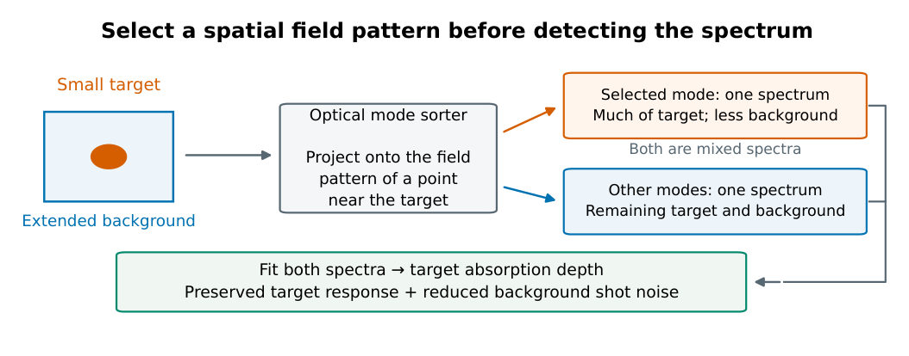
<figcaption class="paper-figure-caption"><b>Fig 1.</b> Fig. 1. Binary SPADE separates a selected optical field mode from its orthogonal complement and records a spectrum at each port. A mode matching the field from a point near the target can retain much of a small target’s light while directing much of an extended background to the other port. Both spectra remain target/background mixtures and are fitted jointly for depth. DI records pixel spectra instead. The schematic illustrates the principle; precision depends on scene geometry, spectra, and receiver loss.</figcaption>
</figure>
<figure class="paper-figure-card">
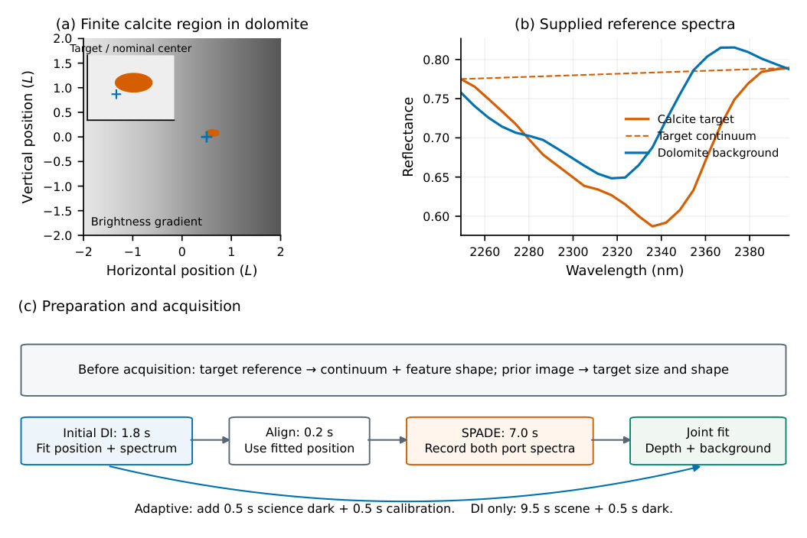
<figcaption class="paper-figure-caption"><b>Fig 2.</b> Fig. 2. C4 scene and acquisition. (a) Finite calcite target in dolomite with a left-to-right brightness gradient, before diffraction. The blue cross is the fixed-comparison mode center; the inset shows its offset from the target. Coordinates use L = 1.09975 mm [(6)]. (b) USGS component reflectances before mixing/filtering. Target depth is the fractional dip below the orange dashed continuum at maximum absorption. (c) Preparation supplies target shape and geometry. DI observes for 9.5 s; adaptive acquisition uses 1.8 s DI localization, 0.2 s alignment, and 7.0 s dual-port observation, fitted jointly. Dark and calibration complete the 10 s budgets (Table III).</figcaption>
</figure>
<figure class="paper-figure-card">
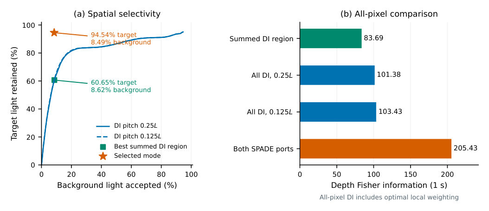
<figcaption class="paper-figure-caption"><b>Fig 3.</b> Fig. 3. Ideal C4 comparison at 2335.97 nm, with L = 1.09975 mm. (a) Target retention versus background acceptance for circular DI regions at pitches 0.25L and 0.125L. The marked region maximizes summed-count Fisher information. (b) Information for equal 1 s exposures: the best summed region, all DI pixels/optimal local weights, and both mode ports. The mode center is (0.5L, 0) and target center (0.62L, 0.08L). Brightness, position, and background are known; extra transmission is unity and crosstalk zero. SPADE exceeds even the finer-DI information.</figcaption>
</figure>
<figure class="paper-figure-card">
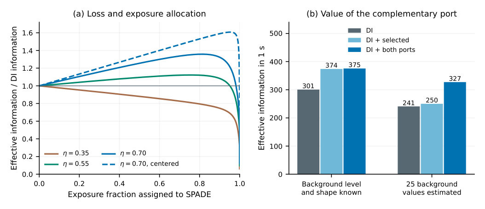
<figcaption class="paper-figure-caption"><b>Fig 4.</b> Fig. 4. Fixed-response design with an estimated C4 background. (a) Effective depth information relative to DI versus mode exposure fraction. Solid curves use the nominal center at labeled transmissions; the blue dashed curve uses the true center at transmission 0.70. The horizontal line denotes equal information. (b) Information in 1 s for DI and 20/80 DI–mode acquisition, retaining one or both ports. Background level/shape are fixed in the known group; all 25 values are fitted in the estimated group. The complement primarily constrains background. Both panels include 12 nm response and known 1% crosstalk, with unknown target brightness, slope, and position. Responses/calibration are fixed;...</figcaption>
</figure>
<figure class="paper-figure-card">
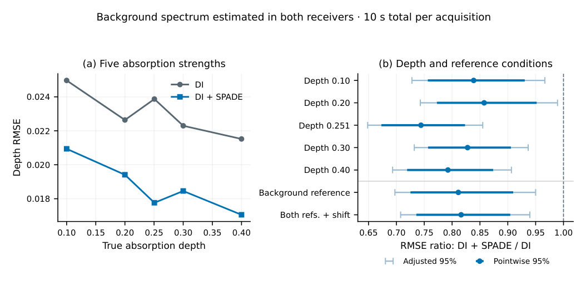
<figcaption class="paper-figure-caption"><b>Fig 5.</b> Fig. 5. Complete 10 s acquisitions with the same freely estimated background in both receivers, 400 trials per arm. (a) Depth RMSE at five true depths with fixed target continuum/profile; lines guide the eye. (b) Adaptive/DI ratios with pointwise 95% intervals (dark) and seven-comparison Bonferroni intervals (light); values below one favor adaptive acquisition. Reference-error tests use new perturbations of one standard error of the mean (SEM), with 12 nm correlation; the last also applies a shared offset within ±0.5 nm. Adaptive trials include DI localization, alignment time, calibration, and detector costs.</figcaption>
</figure>
</div>

<p><strong>Summary.</strong> This paper introduces a quantum-inspired measurement technique called Spatial-Mode Demultiplexing (SPADE) to improve the measurement of mineral absorption depth. By splitting the light into two orthogonal spatial modes, the method effectively suppresses background photon noise that plagues conventional spectral analysis. This results in a significant reduction in the estimation error for local mineral spectroscopy.</p>
<p><strong>Why it may be interesting.</strong> The use of spatial-mode demultiplexing to suppress background noise in a spectral measurement is highly relevant to quantum optics and open quantum systems, as it models noise reduction techniques analogous to quantum measurement strategies.</p>
<details>
<summary>Detailed structure</summary>
<p><strong>Main problem.</strong> The core problem is quantitatively measuring the absorption depth of a small mineral region while accurately separating this target signal from background photon noise introduced by diffraction and the surrounding environment.</p>
<p><strong>Main result.</strong> The proposed quantum-inspired acquisition method reduces the depth root-mean-square error (RMSE) by 14%–26% compared to direct imaging (DI) under equivalent background freedom.</p>
<p><strong>Method.</strong> The authors developed a framework using Spatial-Mode Demultiplexing (SPADE), which separates the optical field into a selected mode and its orthogonal complement to suppress background noise before detection.</p>
<p><strong>Model / system.</strong> The system is local mineral absorption spectroscopy, involving a finite mineral target embedded in a background. The model incorporates concepts from diffraction, spectral fitting, and quantum-inspired measurement theory.</p>
<p><strong>Key observables.</strong> Target absorption depth (fractional decrease in reflectance), unknown spatially shared background spectrum, and the root-mean-square error (RMSE) of the depth estimate.</p>
<p><strong>Important parameters / regimes.</strong> Absorption strength, background photon noise, spatial mode selection efficiency, and acquisition time/cost.</p>
<p><strong>Assumptions / limitations.</strong> The analysis assumes fixed-response Poisson measurements, and the initial modeling relies on supplied target feature shapes and geometries.</p>
<p><strong>Figures summary.</strong> Figure 1 schematically shows how Binary SPADE separates the optical field into two modes to reduce background noise. Figure 2 illustrates the experimental setup, showing a finite target in a background and the sequence of DI and adaptive SPADE measurements.</p>
<p><strong>Paper structure.</strong> The paper progresses from defining the spectral measurement challenge to introducing the SPADE framework, detailing the joint inference process using initial DI data and dual-port SPADE measurements, and concluding with quantitative performance comparisons against DI.</p>
</details>
<details>
<summary>Abstract</summary>
<p>Absorption-band depth measures the fractional decrease in mineral reflectance below its local continuum. Recovering this feature strength for a small mineral region supports quantitative comparisons between regions, but diffraction mixes its light with the surroundings. Conventional spectral fitting can separate mean contributions; it cannot remove background photon noise already recorded. We develop a quantum-inspired measurement framework that uses spatial-mode demultiplexing (SPADE) to retain the target absorption response while reducing background acceptance before detection. The framework connects finite mineral-region geometry and reference spectra to estimation precision. A loss-dependent design condition identifies when adding SPADE exposure improves on direct imaging (DI) under fixed-response Poisson measurements with unknown scene parameters. Joint inference from initial DI observations and both mode ports estimates target depth together with an unknown, spatially shared background spectrum. In equal-time simulations that include localization uncertainty, alignment time, calibration, and detector costs, this acquisition reduces depth root-mean-square error (RMSE) by 14\%--26\% across five absorption strengths relative to all-pixel DI with the same background freedom. These results use a supplied target feature shape and geometry, with target continuum slope fitted and curvature fixed. The analysis separates optical selectivity from parameter ambiguity and acquisition cost, providing a quantitative basis for spatial-mode receiver design in local mineral spectroscopy.</p>
</details>
<p><sub><a href="#top">↑ back to top</a></sub></p>

<p><a id="paper-2610.39226"></a></p>
<h3 id="beyond-direct-imaging-quantum-measurement-design-for-small-target-detection-in-uav-hyperspectral-sensing"><a href="http://arxiv.org/abs/2610.39226v1">Beyond Direct Imaging: Quantum Measurement Design for Small-Target Detection in UAV Hyperspectral Sensing</a></h3>
<p><strong>Authors:</strong> Qipeng Qian, Jialiang Jin, Shihao Wang, Yuntao Qian<br>
<strong>Type:</strong> theory · <strong>Category:</strong> other · <strong>PDF:</strong> <a href="https://arxiv.org/pdf/2610.39226v1">https://arxiv.org/pdf/2610.39226v1</a><br>
<strong>Analysis basis:</strong> full PDF text, analyzed in chunks
<strong>Topic relevance:</strong> 🔥 <code>quantum measurements</code> <strong>4/5</strong> · <code>interference shaping light</code> <strong>1/5</strong></p>
<div class="figure-strip-hint">↔ Scroll figures horizontally</div>
<div class="paper-figures-scroll">
<figure class="paper-figure-card">
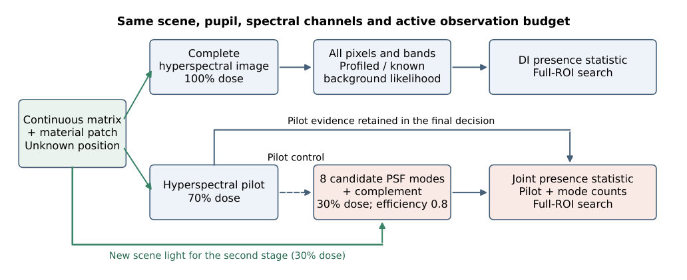
<figcaption class="paper-figure-caption"><b>Fig 1.</b> Fig. 1. The common optical scene and two alternative acquisitions. Complete direct imaging uses the full observation budget for all image pixels and spectral channels. The adaptive receiver uses a paid imaging pilot to select eight candidate PSF modes, measures new light in those modes and their complement, and combines both records in a full-ROI presence test. Green paths carry scene light; blue paths carry recorded data, and the dashed arrow carries classical control of the mode measurement. The true target position is supplied to neither receiver.</figcaption>
</figure>
<figure class="paper-figure-card">
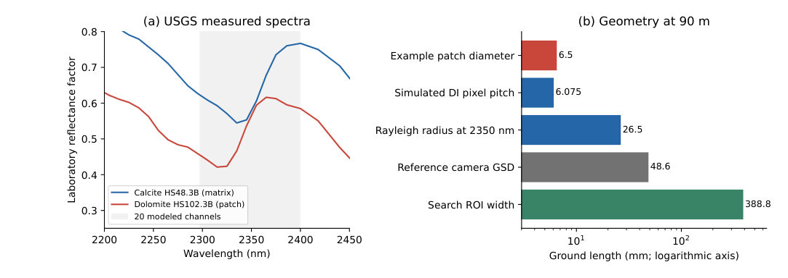
<figcaption class="paper-figure-caption"><b>Fig 2.</b> Fig. 2. Literature-grounded scene inputs and physical scales. Measured calcite and dolomite reflectances determine the finite spectral contrast. The scale comparison distinguishes the target diameter, the 6.075-mm simulated DI pixel pitch, diffraction scale, reference-camera ground sampling, and search-ROI width. The fine DI grid represents the complete optical image; the 48.6-mm reference-camera GSD is not the sampling used by the DI baseline.</figcaption>
</figure>
<figure class="paper-figure-card">
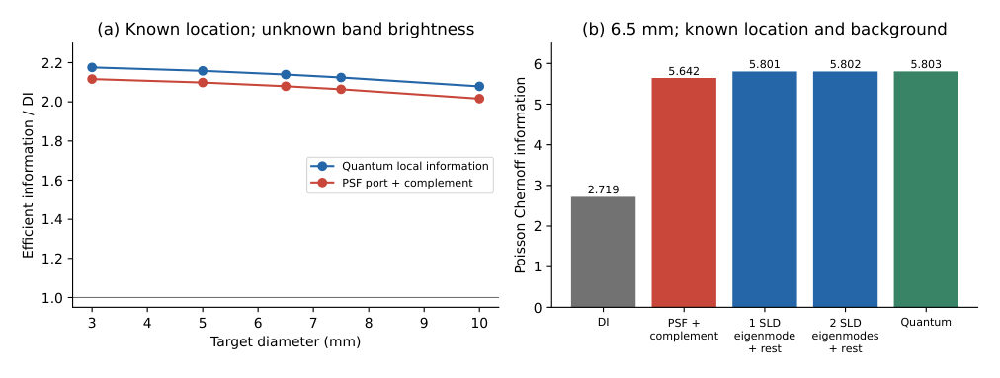
<figcaption class="paper-figure-caption"><b>Fig 3.</b> Fig. 3. From the quantum information gap to a finite optical measurement. Left: specified-position local information relative to DI after eliminating per-band brightness. Right: finite-contrast Chernoff information at d = 6.5 mm with position and brightness supplied. The reference PSF uses the actual chromatic pupil projections and a complement output. Local efficient information and finite-contrast Chernoff information answer different questions, but both show strong concentration in a small number of spatial modes.</figcaption>
</figure>
<figure class="paper-figure-card">
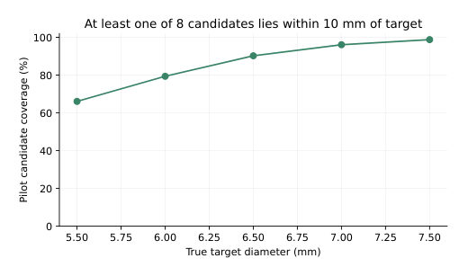
<figcaption class="paper-figure-caption"><b>Fig 4.</b> Fig. 4. Coverage of the unknown target by eight pilot-selected candidate centers. Coverage denotes at least one candidate within 10 mm of the true center; the truth is used only for this diagnostic. The pilot uses 70% of the shared active observation and the same fixed 6.5-mm detection template for every true diameter.</figcaption>
</figure>
<figure class="paper-figure-card">
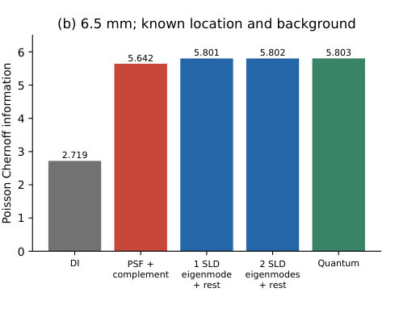
<figcaption class="paper-figure-caption"><b>Fig 5.</b> Figure 4 reports whether any of the eight pilot-selected centers lies within 10 mm of the target. This descriptive alignment diagnostic uses truth only for evaluation; it neither restricts the position prior nor determines detection acceptance. Coverage rises from 66.10% at 5.5 mm to 90.25% at 6.5 mm, reaching 98.80% at 7.5 mm. Keeping separated max- ima usually supplies a useful candidate in the high-detection regime. The subsequent acquisition uses the actual orthogonal- ized fields, accounting for overlap among the original PSFs. The full-field experiment below measures whether this placement, together with the retained pilot evidence, makes the remaining mode-stage exposure useful.</figcaption>
</figure>
</div>

<p><strong>Summary.</strong> This paper proposes a quantum-assisted framework to improve the detection of small mineral targets in UAV hyperspectral images by moving beyond simple intensity measurements. It leverages the information contained within the optical measurement itself by designing adaptive spatial-mode receivers. The results show that this quantum approach significantly boosts detection rates compared to standard direct imaging techniques under shared measurement budgets.</p>
<p><strong>Why it may be interesting.</strong> Although the application is remote sensing, the core methodology involves designing optimal quantum measurements (spatial-mode selection) to extract maximum information about a localized unknown parameter (the target spectrum) from a noisy, mixed signal, which is highly relevant to quantum sensing and quantum estimation theory.</p>
<details>
<summary>Detailed structure</summary>
<p><strong>Main problem.</strong> The paper addresses the challenge of detecting small, spectrally distinct mineral patches in UAV hyperspectral sensing when their light signal is mixed with the background due to diffraction.</p>
<p><strong>Main result.</strong> A quantum-assisted framework was developed that demonstrates detection gains (e.g., 62.95% to 69.65%) over complete direct imaging by exploiting information encoded in the optical measurement itself.</p>
<p><strong>Method.</strong> The authors utilize a quantum-assisted framework based on a common radiometric and diffraction model, employing spatial-mode estimation and advanced information metrics to quantify residual target information.</p>
<p><strong>Model / system.</strong> The physical system is an unmanned aerial vehicle (UAV) hyperspectral imager observing a geological region. The model compares direct imaging (DI) with adaptive spatial-mode measurements to distinguish localized compositional changes from the continuous background matrix.</p>
<p><strong>Key observables.</strong> Detection probability (%), information retention, quantum Chernoff Information ($C_Q$), and background-aware information metrics ($J_{Q,eff}, J_{E,eff}$).</p>
<p><strong>Important parameters / regimes.</strong> Active-exposure budget, false alarm rates (1% region-level), and the spectral/spatial characteristics of the target mineral patches.</p>
<p><strong>Assumptions / limitations.</strong> The analysis assumes a common radiometric and diffraction model, and the quantum benchmark is linked to finite receiver design, while local tests may approximate full-scene convergence.</p>
<p><strong>Figures summary.</strong> Figure 1 illustrates the comparison between Complete Direct Imaging (DI) and the Adaptive Receiver using an imaging pilot to select candidate modes. Other figures compare detection probabilities under various acquisition strategies.</p>
<p><strong>Paper structure.</strong> The paper develops a theoretical framework by modeling the measurement process using coherence operators and information theory, deriving performance metrics, and then simulating and comparing the detection capabilities of different measurement strategies (DI vs. Adaptive Receiver) using measured mineral spectra.</p>
</details>
<details>
<summary>Abstract</summary>
<p>Small mineral patches can be spectrally distinct yet difficult to detect when diffraction mixes their light with the surrounding rock. Conventional hyperspectral detectors analyze recorded intensities, leaving an opportunity to recover target evidence through the optical measurement itself. We develop a quantum-assisted framework for exploiting this opportunity in prospective unmanned aerial vehicle (UAV) hyperspectral sensing. A common radiometric and diffraction model describes direct imaging and spatial-mode measurements of the same light. The theory identifies target changes that survive background fitting and explains when mode measurements retain more detection information. It quantifies losses from mode mismatch and unresolved outputs, linking the quantum benchmark to finite receiver design. A common-basis result identifies when material spectra can share a spatial measurement at fixed geometry. An adaptive receiver uses an imaging pilot to select candidate modes and combines both stages in a full-region presence test. Simulations based on measured mineral spectra and published UAV acquisition scales demonstrate gains over complete direct imaging at a shared active-exposure budget, including pilot cost and optical loss. At matched empirical 1\% region-level false alarms, detection increases from 62.95\% to 69.65\% for a representative target. Paired analysis supports gains with registration uncertainty and, separately, under controlled nonuniform backgrounds. Calibrated mode errors reveal where measurement losses weaken or reverse the benefit. These results connect background identifiability to receiver choices and their operating conditions. They provide a framework for designing spatial measurements alongside spectral channels to detect small material features.</p>
</details>
<p><sub><a href="#top">↑ back to top</a></sub></p>

<p><a id="paper-2610.39693"></a></p>
<h3 id="optimized-dynamical-decoupling-for-spin-ensembles-with-large-inhomogeneities"><a href="http://arxiv.org/abs/2610.39693v1">Optimized Dynamical Decoupling for Spin Ensembles with Large Inhomogeneities</a></h3>
<p><strong>Authors:</strong> Rajan Paul, Genko Genov, Oliver Schmid, Shinobu Onoda, Yutaka Kobayashi, Junichi Isoya, Fedor Jelezko<br>
<strong>Type:</strong> experiment · <strong>Category:</strong> other · <strong>PDF:</strong> <a href="https://arxiv.org/pdf/2610.39693v1">https://arxiv.org/pdf/2610.39693v1</a><br>
<strong>Analysis basis:</strong> full PDF text, analyzed in chunks
<strong>Topic relevance:</strong> 🔥 <code>QC/QI experiment</code> <strong>4/5</strong> · <code>quantum measurements</code> <strong>1/5</strong></p>
<div class="figure-strip-hint">↔ Scroll figures horizontally</div>
<div class="paper-figures-scroll">
<figure class="paper-figure-card">
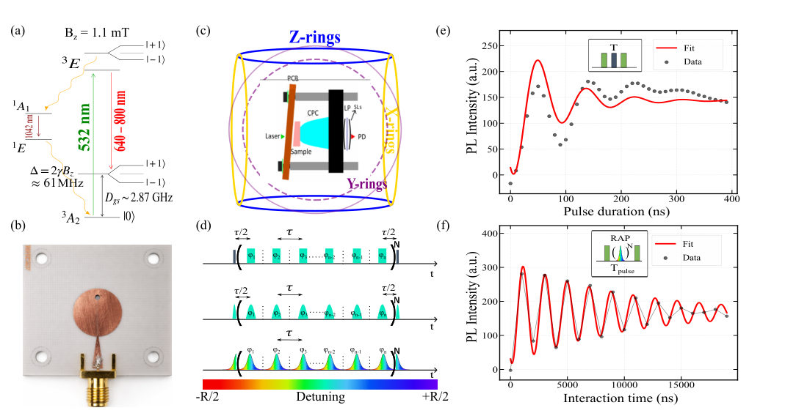
<figcaption class="paper-figure-caption"><b>Fig 1.</b> FIG. 1: (a) Energy level diagram of the NV−center at bias magnetic field of amplitude 1.1 mT. The NV is prepared in state |0⟩by an off-resonant green laser (532 nm), coherently manipulated using microwave fields coupling states |0⟩ and |-1⟩, and optically read out via spin-dependent fluorescence [8, 13]. (b) Home-built microwave resonator, labeled PCB, used in the experiment, modified from Sasaki et al. [19]. (c) Cross-sectional schematic of the experimental assembly. The Helmholtz coil encloses the optical detection system. Labels: CPC, compound parabolic concentrator; SL, spherical lens; LP, long-pass filter; PD, photodiode. The pink element represents the diamond sample. (d) Schematic...</figcaption>
</figure>
<figure class="paper-figure-card">
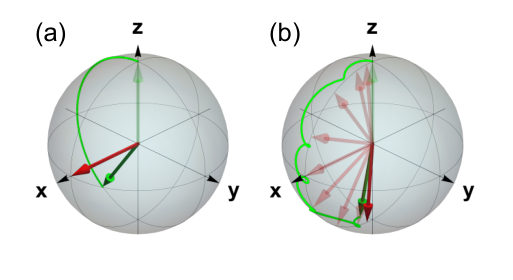
<figcaption class="paper-figure-caption"><b>Fig 2.</b> FIG. 2: Example of the evolution on the Bloch sphere of (a) a rectangular and (b) a RAP pulse in the pres- ence of a 20% amplitude error, i.e., eΩ= Ω(1 + ϵ), ϵ = −0.2, and no detuning errors δϵ = 0. The green semi-transparent (solid) arrow shows the Bloch vector at the beginning (end) of the respective pulse. The red transparent (solid) arrow shows the normalized torque vector during (at the end) of the pulse. The duration of the rectangular pulse is Tpulse = π/Ω. The example RAP pulse follows the Allen-Eberly model [20, 56], where Ω(t) = Ω0 sech (t/T), δ(t) = (R/2) tanh (t/T) with peak Rabi frequency Ω0 = (2π) 11.45 MHz, maximum chirp range R = (2π) 7.5 MHz, pulse duration Tpulse = 1 µs,...</figcaption>
</figure>
<figure class="paper-figure-card">
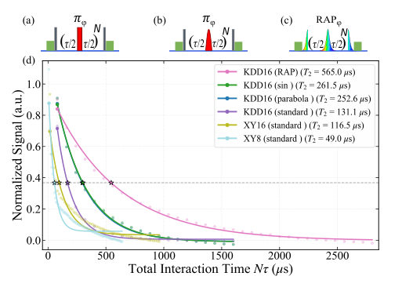
<figcaption class="paper-figure-caption"><b>Fig 3.</b> FIG. 3: Schematic illustrations of the applied pulses in the respective sequences for (a) standard rectangu- lar pulses, (b) sine- and parabola-shaped π pulses, and (c) RAP pulses. (d) Signal decay curves for various dynamical decoupling (DD) protocols, comparing XY8, XY16, and KDD16 sequences implemented with stan- dard, parabola-shaped, and sine-shaped pulses. The hor- izontal axis represents the total interaction time t = Nτ, where we vary the sequence order N, i.e, the number of times a sequence is repeated, and the vertical axis displays the photoluminescence signal normalized to the contrast of standard Rabi oscillations. The time separa- tion between the centers of the pulses τ was...</figcaption>
</figure>
<figure class="paper-figure-card">
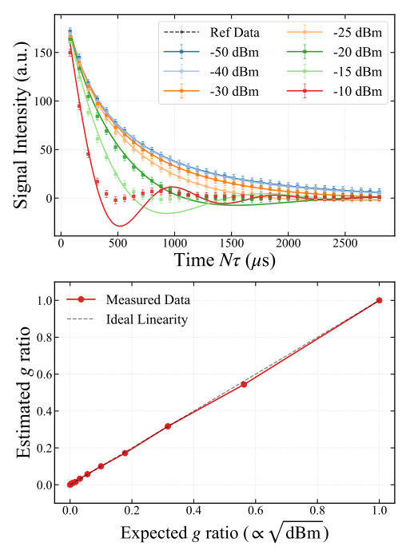
<figcaption class="paper-figure-caption"><b>Fig 4.</b> FIG. 4: Comparison of the signal intensity decay with KDD16-RAP sequence in the presence of an AC mag- netic field with varying amplitude. (Top) Coherence decay curves in the presence of a 500 kHz test signal applied at different power amplification, from −50 to +10 dBm. The “Ref” data (dotted grey) represent the reference signal in the absence of an externally applied field. The filter function was set at τ = 1µs to perform order-N sweeps. The extended coherence time T2 and enhanced contrast C, provided by the RAPs, lead to sig- nificant improvement in sensitivity, according to the rela- tion η ∝1/(γC√T2), where γ is the gyromagnetic ratio. The decay curves are fitted with a stretched...</figcaption>
</figure>
<figure class="paper-figure-card">
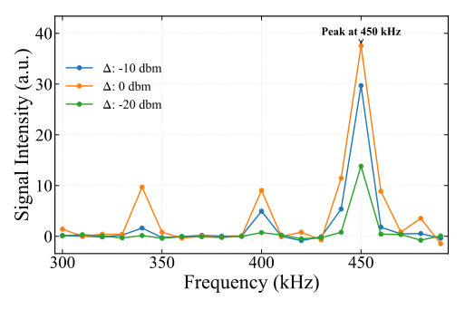
<figcaption class="paper-figure-caption"><b>Fig 5.</b> FIG. 5: Intensity of the signal difference, obtained with KDD16-RAP sequence, repeated N = 8 times, in the presence and absence of an external target field with a test signal at fs = 450 kHz, measured at three power levels vs. probe frequency fp = 1/(2τ). The primary resonance at 450 kHz scales with power, as do the spu- rious harmonics observed at 340 kHz and 400 kHz (see text).</figcaption>
</figure>
</div>

<p><strong>Summary.</strong> This paper develops and experimentally validates optimized Dynamical Decoupling (DD) sequences for protecting quantum coherence in NV spin ensembles. By replacing standard square pulses with adiabatically shaped Rapid Adiabatic Passage (RAP) pulses, the researchers significantly extend the memory time and improve the signal contrast. This optimized protocol is shown to be generally applicable for high-inhomogeneity spin systems and is successfully applied for enhanced quantum sensing.</p>
<p><strong>Why it may be interesting.</strong> This work provides concrete, experimentally validated techniques (RAP pulse shaping) to push the limits of coherence in solid-state quantum memories, which is crucial for building practical quantum sensors and quantum information processors.</p>
<details>
<summary>Detailed structure</summary>
<p><strong>Main problem.</strong> Protecting the coherent properties of spin ensembles from environmental noise, especially when the system exhibits large amplitude and frequency inhomogeneities.</p>
<p><strong>Main result.</strong> The optimal coherence protection protocol involves using Rapid Adiabatic Passage (RAP) pulses combined with phase variation, achieving an order-of-magnitude increase in memory time compared to standard sequences.</p>
<p><strong>Method.</strong> The authors compare numerous Dynamical Decoupling (DD) protocols, optimizing pulse shaping by replacing standard rectangular pulses with smooth, adiabatic pulse envelopes.</p>
<p><strong>Model / system.</strong> The study uses negatively charged Nitrogen-Vacancy (NV) centers in diamond as the spin ensemble platform. The dynamics are modeled using the von Neumann equation, focusing on the evolution of the Bloch vector.</p>
<p><strong>Key observables.</strong> Coherence time ($T_2$), signal contrast, and the ability to sense weak oscillating magnetic fields (AC magnetometry).</p>
<p><strong>Important parameters / regimes.</strong> Amplitude and frequency inhomogeneities ($\epsilon, \delta_\epsilon$), pulse duration ($T_{	ext{pulse}}$), and the Rabi frequency ($\Omega$).</p>
<p><strong>Assumptions / limitations.</strong> The primary limitation addressed is the presence of significant and varying environmental noise ($\delta_\epsilon$ and $\epsilon$) in the spin ensemble.</p>
<p><strong>Figures summary.</strong> Figures illustrate energy level diagrams, experimental setups, and crucial comparisons of Rabi oscillations decay curves showing the superior contrast and longer coherence times achieved with RAP pulses versus standard pulses.</p>
<p><strong>Paper structure.</strong> The paper systematically compares various DD protocols, introduces the concept of pulse shaping (sine/parabolic envelopes), demonstrates the robustness of RAP pulses against inhomogeneities, and finally applies the optimized sequence to measure external magnetic fields.</p>
</details>
<details>
<summary>Abstract</summary>
<p>Spin ensembles show increasing promise for highly efficient quantum sensing and quantum technologies. However, protecting their coherent properties remains a significant challenge. Dynamical decoupling (DD) typically employs a sequence of fast pulses that aim to reduce the effect of unwanted system-environment interactions. However, the performance of the DD sequences typically suffers in spin ensembles, e.g., due to amplitude and frequency inhomogeneities and control errors. In this work, we compare the performance of an extensive number of DD protocols for coherence protection and quantum sensing in an ensemble of negatively charged NV centers under ambient conditions. We identify the optimal approach that uses rapid adiabatic passage pulses, which are robust to amplitude and frequency inhomogeneity, in combination with the variation of their phases. We experimentally demonstrate an improved signal contrast and an order-of-magnitude increase in memory time with the optimal sequence compared to the widely used XY8 with standard rectangular pulses. We also apply our approach for improved sensing of a weak oscillating field. While our particular demonstration is with NV centers in diamond, the optimized protocol is generally applicable to other spin ensembles and to systems with high amplitude and/or frequency inhomogeneities.</p>
</details>
<p><sub><a href="#top">↑ back to top</a></sub></p>

<p><a id="paper-2610.38922"></a></p>
<h3 id="adaptive-local-measurements-for-quantum-learning-can-exponentially-outperform-nonadaptive-global-measurements"><a href="http://arxiv.org/abs/2610.38922v1">Adaptive Local Measurements For Quantum Learning Can Exponentially Outperform Nonadaptive Global Measurements</a></h3>
<p><strong>Authors:</strong> Alireza Goldar, Zhen Qin, Zhihui Zhu, Zhe-Xuan Gong, Michael B. Wakin<br>
<strong>Type:</strong> theory · <strong>Category:</strong> quantum information and computing · <strong>PDF:</strong> <a href="https://arxiv.org/pdf/2610.38922v1">https://arxiv.org/pdf/2610.38922v1</a><br>
<strong>Analysis basis:</strong> full PDF text, analyzed in chunks
<strong>Topic relevance:</strong> 🔥 <code>quantum measurements</code> <strong>4/5</strong></p>
<div class="figure-strip-hint">↔ Scroll figures horizontally</div>
<div class="paper-figures-scroll">
<figure class="paper-figure-card">
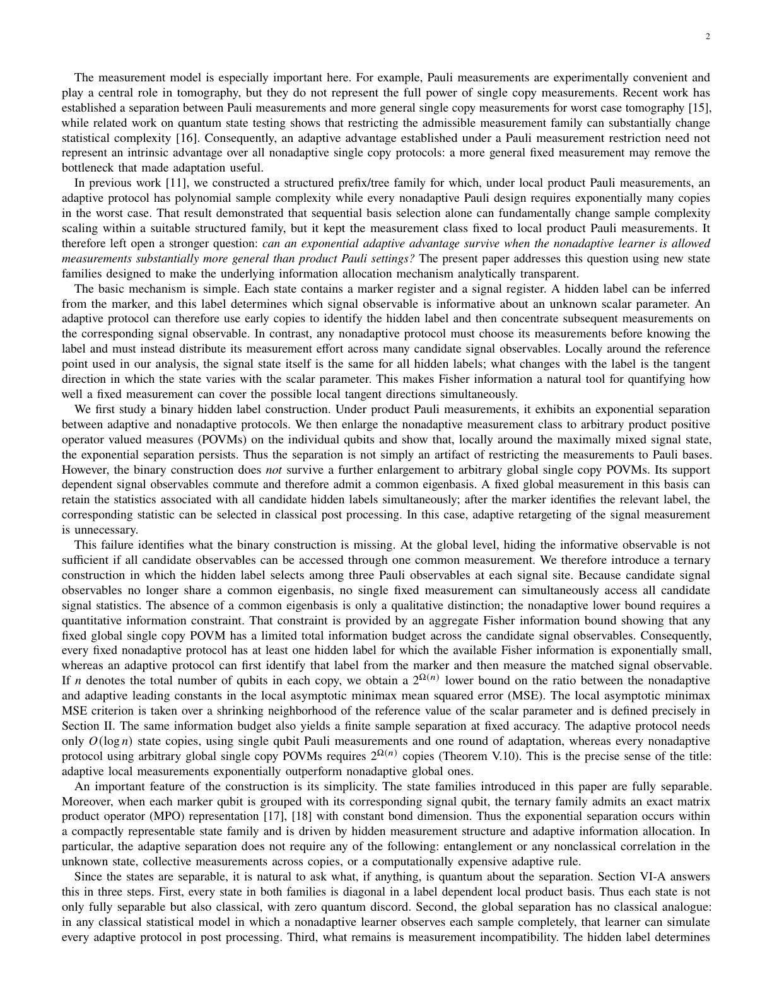
<figcaption class="paper-figure-caption"><b>Fig 1.</b> Low-resolution page preview, page 2</figcaption>
</figure>
<figure class="paper-figure-card">
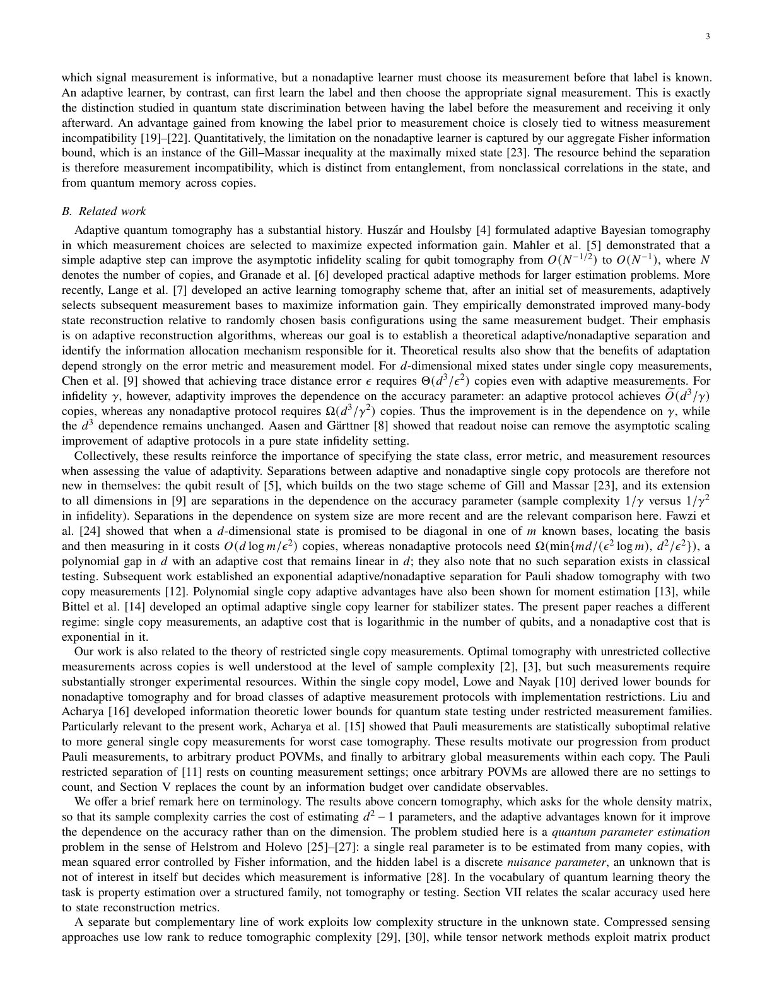
<figcaption class="paper-figure-caption"><b>Fig 2.</b> Low-resolution page preview, page 3</figcaption>
</figure>
<figure class="paper-figure-card">
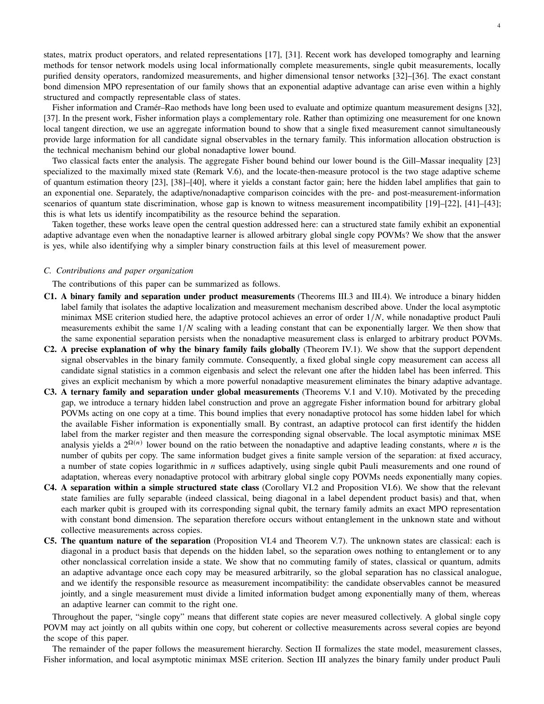
<figcaption class="paper-figure-caption"><b>Fig 3.</b> Low-resolution page preview, page 4</figcaption>
</figure>
<figure class="paper-figure-card">
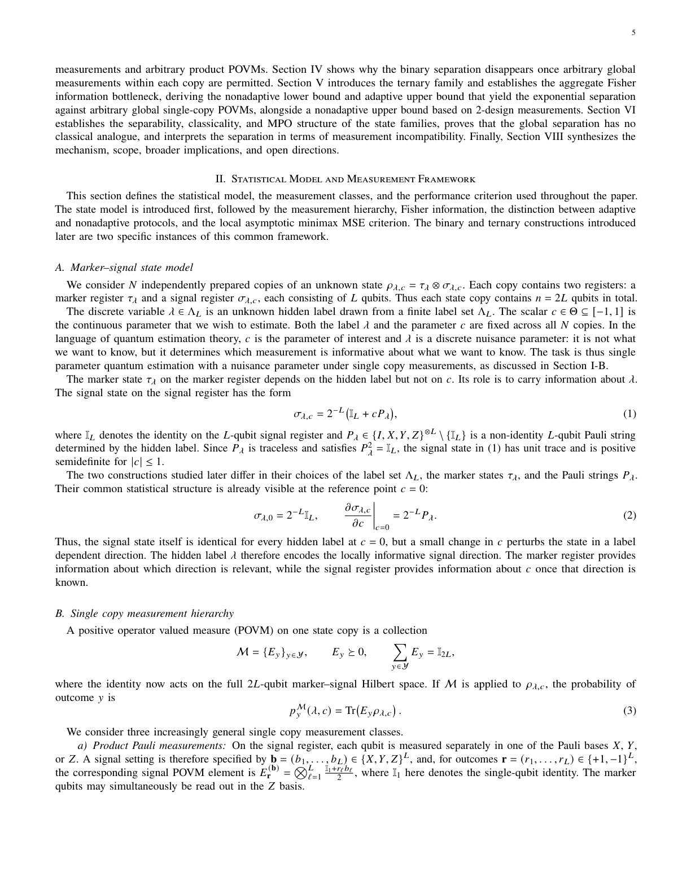
<figcaption class="paper-figure-caption"><b>Fig 4.</b> Low-resolution page preview, page 5</figcaption>
</figure>
<figure class="paper-figure-card">
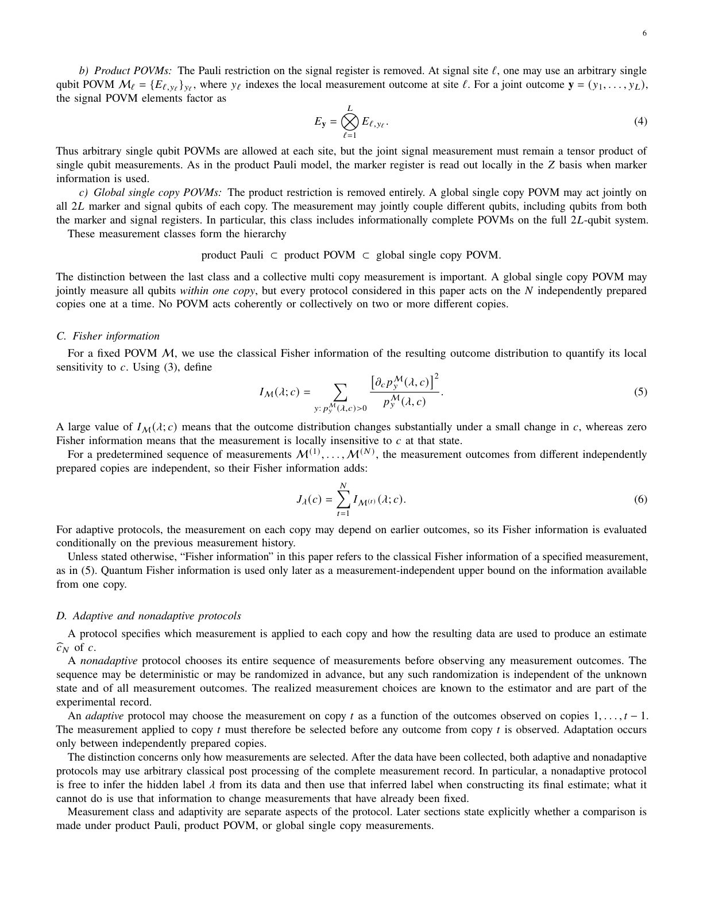
<figcaption class="paper-figure-caption"><b>Fig 5.</b> Low-resolution page preview, page 6</figcaption>
</figure>
</div>

<p><strong>Summary.</strong> This work proves that adaptively choosing quantum measurements based on intermediate results can yield an exponential advantage in information gain over any fixed, nonadaptive measurement strategy. This advantage is shown to stem purely from the incompatibility of the candidate observables, requiring no entanglement or quantum memory. It establishes measurement incompatibility as a novel resource in quantum learning theory.</p>
<p><strong>Why it may be interesting.</strong> It provides a fundamental resource theory result, showing that measurement incompatibility itself can be a resource for quantum learning, distinct from entanglement, which is highly relevant for understanding measurement limitations in complex quantum systems.</p>
<details>
<summary>Detailed structure</summary>
<p><strong>Main problem.</strong> The paper investigates whether adaptively chosen quantum measurements, based on previous outcomes, can provide an exponential advantage in information gain over measurements fixed in advance (nonadaptive global measurements).</p>
<p><strong>Main result.</strong> An exponential advantage is demonstrated by showing that an adaptive protocol requires only logarithmically many copies, while the best nonadaptive protocol requires exponentially many copies, even for separable states.</p>
<p><strong>Method.</strong> The analysis uses Fisher information bounds to quantify the information gain, comparing the sample complexity required for adaptive versus nonadaptive estimation protocols.</p>
<p><strong>Model / system.</strong> The model involves multi-qubit states constructed with a 'marker register' and a 'signal register,' where an unknown scalar parameter is encoded in one of exponentially many candidate observables.</p>
<p><strong>Key observables.</strong> Fisher information, Mean Squared Error (MSE), and the number of required measurement copies.</p>
<p><strong>Important parameters / regimes.</strong> The separation scales are logarithmic ($\log n$) for adaptive vs. exponential ($2\Omega(n)$) for nonadaptive, where $n$ is the number of qubits.</p>
<p><strong>Assumptions / limitations.</strong> The separation relies fundamentally on the measurement incompatibility of the candidate observables, not on entanglement or quantum memory.</p>
<p><strong>Paper structure.</strong> The paper develops the problem by first establishing the exponential advantage using a ternary construction, showing the advantage persists even when enlarging the measurement class to arbitrary product POVMs, and finally confirming the resource is measurement incompatibility.</p>
</details>
<details>
<summary>Abstract</summary>
<p>Can measurements chosen adaptively, in response to earlier outcomes, be exponentially more informative than measurements fixed in advance? In many quantum settings, adaptivity helps at most polynomially; known exponential advantages require coherent measurements across copies or restricted measurements. We show an exponential advantage measuring one copy at a time, with no quantum memory kept between state copies, even when the nonadaptive learner may perform arbitrary global measurements on each copy. We construct explicit families of multi-qubit states in which a scalar parameter is encoded in one of exponentially many candidate observables, with an auxiliary marker indicating which one. An adaptive protocol identifies the relevant observable and then measures it using only single-qubit measurements and one round of adaptation. At fixed accuracy, it needs logarithmically many copies as the qubit count grows, whereas every nonadaptive protocol needs exponentially many. The same mechanism yields an exponential gap in local asymptotic minimax mean squared error constants, tight up to the exponential base. The states are separable and classical in label-dependent product bases; no entanglement or other nonclassical correlations are required. The gap comes from measurement incompatibility: the candidate observables cannot be measured jointly, so a fixed measurement must divide its information budget among them, while adaptivity selects the informative one. Accordingly, the separation disappears when the candidate observables commute, and cannot occur with fully observed classical samples. Measurement incompatibility thus emerges as a resource for quantum learning, distinct from entanglement and quantum memory, that classical feedback alone can exploit.</p>
</details>
<p><sub><a href="#top">↑ back to top</a></sub></p>

<p><a id="paper-2610.40158"></a></p>
<h3 id="inevitability-of-the-petz-transpose-map"><a href="http://arxiv.org/abs/2610.40158v1">Inevitability of the Petz transpose map</a></h3>
<p><strong>Authors:</strong> Jacopo Surace, Chenxu Li, Francesco Buscemi<br>
<strong>Type:</strong> theory · <strong>Category:</strong> other · <strong>PDF:</strong> <a href="https://arxiv.org/pdf/2610.40158v1">https://arxiv.org/pdf/2610.40158v1</a><br>
<strong>Analysis basis:</strong> full PDF text, analyzed in chunks
<strong>Topic relevance:</strong> 🔥 <code>quantum measurements</code> <strong>4/5</strong></p>
<div class="figure-strip-hint">↔ Scroll figures horizontally</div>
<div class="paper-figures-scroll">
<figure class="paper-figure-card">
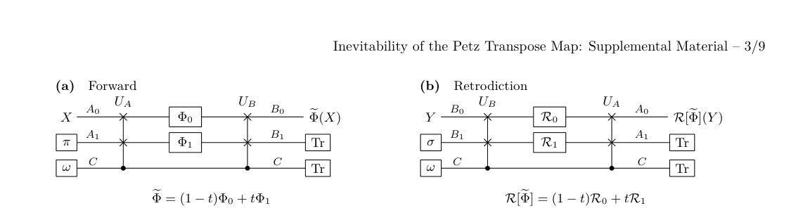
<figcaption class="paper-figure-caption"><b>Fig 1.</b> Figure 1. Controlled-swap circuits for (a) the mixture eΦ and (b) its retrodiction. Here Φi(π) = σ, Ri = Rπ→σ[Φi], and ω = (1 −t)|0⟩⟨0| + t|1⟩⟨1|, with 0 &lt; t &lt; 1. The gates UA and UB swap the wires when the control is |1⟩. Both circuits read from left to right, with arbitrary inputs X and Y .</figcaption>
</figure>
</div>

<p><strong>Summary.</strong> This paper rigorously proves that the Petz transpose map is the unique mathematical structure that serves as the quantum analogue of Bayes' rule. By imposing fundamental consistency requirements—such as composition rules and involutivity—on a general retrodiction assignment, the authors constrain the map to this specific, well-known form. This establishes the deep theoretical necessity of the Petz map across various areas of quantum physics.</p>
<p><strong>Why it may be interesting.</strong> This work provides a deep, axiomatic justification for the structure of quantum retrodiction, which is crucial for understanding measurement theory and state estimation in open quantum systems.</p>
<details>
<summary>Detailed structure</summary>
<p><strong>Main problem.</strong> The paper seeks to find the unique quantum analogue of Bayes' rule (a retrodiction assignment) that is consistent with fundamental physical axioms in quantum theory.</p>
<p><strong>Main result.</strong> The unique assignment satisfying the consistency requirements (involutivity, composition rules, unitary inversion) is proven to be the Petz transpose map, establishing its necessity.</p>
<p><strong>Method.</strong> The authors employ an axiomatic approach, imposing four consistency requirements on the retrodiction map and using algebraic constraints derived from composition rules to uniquely determine its functional form.</p>
<p><strong>Model / system.</strong> The theory applies to quantum channels acting on finite-dimensional full matrix algebras, characterized by input and output reference states ($\pi, \sigma$).</p>
<p><strong>Key observables.</strong> The retrodiction assignment $R_{\pi 	o \sigma}[\Phi]$ and the Petz transpose map.</p>
<p><strong>Important parameters / regimes.</strong> The reference states ($\pi, \sigma$), the channel $\Phi$, and the phase factor $t$ derived from continuity requirements.</p>
<p><strong>Assumptions / limitations.</strong> The theorem is proven for channels between finite-dimensional full matrix algebras, and the derivation relies heavily on assuming involutivity for the strongest result.</p>
<p><strong>Figures summary.</strong> Figures illustrate controlled-swap circuits used to model the forward process and its retrodiction, linking the abstract axioms to concrete quantum circuit structures.</p>
<p><strong>Paper structure.</strong> The paper builds by first defining the retrodiction assignment based on classical analogy, then imposing four consistency axioms, and finally using these axioms—along with techniques involving ancillary systems and unitary conjugations—to derive the unique form of the Petz map.</p>
</details>
<details>
<summary>Abstract</summary>
<p>Bayes' rule is central to classical statistical inference: given a prior and a stochastic model, it determines the corresponding retrodictive conditional probabilities. In quantum theory, however, the question of whether an equally general rule of retrodiction exists and, if so, whether it is uniquely determined remains nontrivial. Here we prove that a retrodiction assignment defined for all priors and channels, which takes each predicted output state back to its prior, must coincide with the Petz transpose map if it is involutive, respects sequential and parallel composition, and agrees with unitary inversion. The theorem holds for channels between finite-dimensional full matrix algebras, with the input and output spaces restricted to the supports of the corresponding reference states. In particular, affinity under probabilistic mixtures and the characteristic square-root dependence on the reference states follow from these requirements rather than being postulated. Without involutivity, the remaining requirements characterize a family of doubly rotated Petz maps. Our result thus explains why the Petz transpose map arises in seemingly different areas of quantum theory: it is the unique quantum analogue of Bayes' rule compatible with these consistency requirements.</p>
</details>
<p><sub><a href="#top">↑ back to top</a></sub></p>

<p><a id="paper-2610.40452"></a></p>
<h3 id="trajectory-sharpening-under-quantum-reference-frame-transformations"><a href="http://arxiv.org/abs/2610.40452v1">Trajectory sharpening under quantum reference frame transformations</a></h3>
<p><strong>Authors:</strong> Matteo Fadel, Giulia Gubitosi<br>
<strong>Type:</strong> theory · <strong>Category:</strong> other · <strong>PDF:</strong> <a href="https://arxiv.org/pdf/2610.40452v1">https://arxiv.org/pdf/2610.40452v1</a><br>
<strong>Analysis basis:</strong> full PDF text, analyzed in chunks
<strong>Topic relevance:</strong> 🔥 <code>quantum measurements</code> <strong>4/5</strong></p>
<div class="figure-strip-hint">↔ Scroll figures horizontally</div>
<div class="paper-figures-scroll">
<figure class="paper-figure-card">
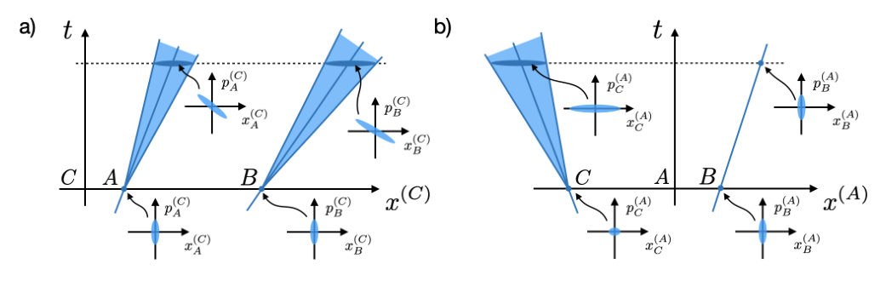
<figcaption class="paper-figure-caption"><b>Fig 1.</b> FIG. 1. Illustration of a reference frame transformation between three particles. a) In the reference frame of C, systems A, B can have well-defined position at time t = 0, but at the cost of giving trajectories with position uncertainty for t &gt; 0 (blue shaded regions). b) Relative to A, however, the trajectory of system B can be made arbitrarily sharp at any fixed time, or uniformly over any prescribed finite time interval, by simultaneously reducing the uncertainties of the commuting EPR observables. In the ideal joint-sharpness limit the entire relational trajectory is sharply defined. Its time evolution is governed by ˆp(A) C , rather than by ˆp(A) B , see Eq. (34).</figcaption>
</figure>
<figure class="paper-figure-card">
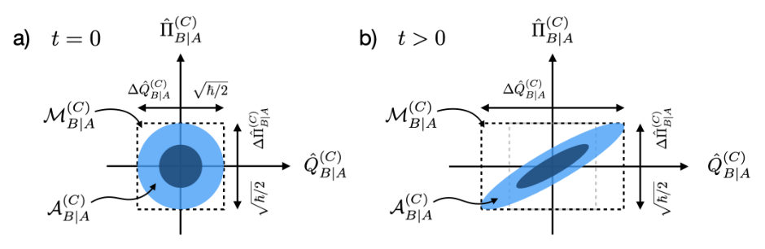
<figcaption class="paper-figure-caption"><b>Fig 2.</b> FIG. 2. Relational trajectory sharpness. Snapshots of the joint distribution of the commuting relational observables ˆQ(C) B|A and ˆΠ(C) B|A at two different times under opposite-mass free evolution. The marginal product M(C) B|A(t) of Eq. (44) is proportional to the area of the axis-aligned uncertainty rectangle determined by the two marginal standard deviations, while A(C) B|A(t) of Eq. (54) is proportional to the area of the corresponding covariance ellipse. Both quantities are invariant under QRF transformations. Under free opposite-mass evolution, AB|A is exactly conserved, whereas MB|A(t) changes whenever the covariance between the two observables changes. Since [ ˆQ(C) B|A, ˆΠ(C)...</figcaption>
</figure>
</div>

<p><strong>Summary.</strong> This paper connects the abstract concept of Quantum Reference Frame transformations to measurable physical effects, specifically trajectory sharpening. Using toy models with negative masses, the authors show that this sharpening is mathematically equivalent to a QRF transformation. The key finding is that sharpness can be distributed across multiple coupled systems rather than being confined to a single reference frame.</p>
<p><strong>Why it may be interesting.</strong> The work provides a concrete, measurable framework for understanding how reference frames affect quantum measurements, which is crucial for interpreting results in quantum metrology and quantum information processing.</p>
<details>
<summary>Detailed structure</summary>
<p><strong>Main problem.</strong> The paper aims to provide an operational, experimentally relevant interpretation of abstract Quantum Reference Frame (QRF) transformations, particularly concerning trajectory sharpening.</p>
<p><strong>Main result.</strong> It shows that trajectory sharpening relative to a negative-mass reference frame is equivalent to a QRF transformation, and it derives monogamy relations showing sharpness can be distributed across collective modes rather than localized in a single frame.</p>
<p><strong>Method.</strong> The analysis uses minimal toy models of free particles with signed masses, developing QRF-invariant sharpness measures and analyzing the transformation of observables under both kinematical and dynamical QRF transformations.</p>
<p><strong>Model / system.</strong> The model involves multiple quantum systems (A, B, C) whose dynamics are analyzed using free Hamiltonians. The core mathematical tool is the QRF transformation operator, which is extended to handle effective negative masses.</p>
<p><strong>Key observables.</strong> Trajectory sharpness measures (marginal uncertainty product, covariance-area measure), and commuting relational observables (EPR-type observables).</p>
<p><strong>Important parameters / regimes.</strong> Effective negative mass ($m_A = -m$), the mass ratio $\lambda_{CA} = |m_C/m_A|$, and the time dependence of the transformation $\hat{S}_T(t)$.</p>
<p><strong>Assumptions / limitations.</strong> The derivation relies on the assumption of block-diagonal covariance between internal and collective modes, and the initial justification of negative mass systems via experimental contexts like atomic spin ensembles.</p>
<p><strong>Figures summary.</strong> Figures illustrate the transformation process, showing position uncertainty in different frames and demonstrating how relative trajectory sharpness can be achieved via the negative-mass reference system.</p>
<p><strong>Paper structure.</strong> The paper progresses from establishing the physical problem (QRF interpretation) to developing the mathematical machinery (QRF transformations, handling negative masses) and finally applying this to derive quantitative results regarding the distribution and limits of trajectory sharpness.</p>
</details>
<details>
<summary>Abstract</summary>
<p>Quantum reference frame (QRF) transformations relate the description of a physical system to different quantum observers, but their connection to concrete experimental phenomena remains largely unclear. Here we show that the trajectory-sharpening effect obtained by correlating a probed system with an effective negative-mass reference admits a natural interpretation as a QRF transformation to the frame of a negative-mass system. Using a minimal toy model of free particles with signed masses, we identify the Einstein-Podolsky-Rosen-type observables responsible for this effect with a pair of commuting relational observables that, under the instantaneous QRF transformation, are mapped to operators local to distinct subsystems. We then show that the corresponding relational trajectory is reproduced by the dynamical QRF transformation, where the transformed relational position acquires an explicit time dependence. We introduce QRF-invariant sharpness measures for relational trajectories and derive monogamy relations showing that a trajectory cannot be made simultaneously arbitrarily sharp with respect to two distinct negative-mass frames. We further show that trajectory sharpness can instead reside in a collective reference mode encoded across two physical systems, even when neither constituent alone provides an arbitrarily sharp reference, so that sharpness can be distributed rather than localized in a single constituent frame. These results provide an operational, experimentally relevant interpretation of QRF transformations for continuous-variable systems.</p>
</details>
<p><sub><a href="#top">↑ back to top</a></sub></p>

<p><a id="paper-2610.39707"></a></p>
<h3 id="non-markovian-quantum-emitter-dynamics-and-bound-state-formation-in-an-aubry-andre-harper-photonic-lattice"><a href="http://arxiv.org/abs/2610.39707v1">Non-Markovian quantum-emitter dynamics and bound-state formation in an Aubry--André--Harper photonic lattice</a></h3>
<p><strong>Authors:</strong> Zahra Jalali-Mola, Jule Neidhart, Saeid Asgarnezhad-Zorgabad, Ortwin Hess<br>
<strong>Type:</strong> theory · <strong>Category:</strong> disordered systems and neural networks · <strong>PDF:</strong> <a href="https://arxiv.org/pdf/2610.39707v1">https://arxiv.org/pdf/2610.39707v1</a><br>
<strong>Analysis basis:</strong> full PDF text, analyzed in chunks
<strong>Topic relevance:</strong> <code>analog quantum simulation</code> <strong>3/5</strong> · <code>correlated / nonlocal dissipation</code> <strong>3/5</strong> · <code>driven-dissipative phase transition</code> <strong>3/5</strong> · <code>methods for driven-dissipative</code> <strong>3/5</strong> · <code>quantum measurements</code> <strong>3/5</strong> · <code>Keldysh / 2PI / non-Gaussian methods</code> <strong>2/5</strong> · <code>interference shaping light</code> <strong>2/5</strong> · <code>non-equilibrium universality</code> <strong>2/5</strong> · <code>Frenkel-Kontorova</code> <strong>1/5</strong> · <code>Tavis-Cummings &amp; cavity-many-emitter</code> <strong>1/5</strong> · <code>scars &amp; prethermalization</code> <strong>1/5</strong></p>
<div class="figure-strip-hint">↔ Scroll figures horizontally</div>
<div class="paper-figures-scroll">
<figure class="paper-figure-card">
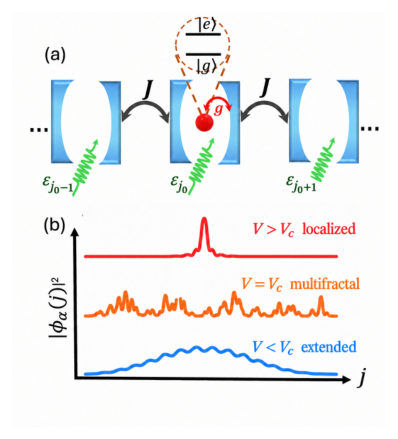
<figcaption class="paper-figure-caption"><b>Fig 1.</b> FIG. 1. Schematic of a two-level QE coupled to an AAH photonic lattice. (a) Real-space representation of the system. The QE is locally coupled with strength 𝑔to the cavity at site 𝑗0. Photons tunnel between adjacent cavities with hopping amplitude 𝐽, while the onsite detunings in the frame rotating at 𝜔0 follow the quasiperiodic modulation 𝜀𝑗= 𝑉cos(2𝜋𝛽𝑗+𝜙).(b) Representative spatial intensity profiles |𝜙𝛼( 𝑗)|2 of the AAH eigenmodes in the extended (𝑉&lt; 𝑉c), multifractal critical (𝑉= 𝑉c), and localized (𝑉&gt; 𝑉c) regimes. In the eigenmode representation, the effective coupling of mode 𝛼to the QE is determined by its local amplitude at the emitter position, 𝑔𝛼= 𝑔𝜙𝛼( 𝑗0). For the standard...</figcaption>
</figure>
<figure class="paper-figure-card">
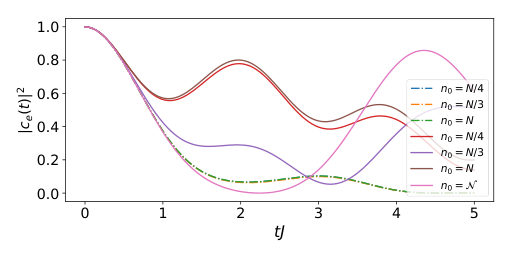
<figcaption class="paper-figure-caption"><b>Fig 2.</b> FIG. 3. QE excited-state population dynamics |𝑐e(𝑡)|2 of QE for different coupling positions in the AAH lattice in (a) and localized LDOS in (b). The QE is coupled at positions 𝑛0 = [𝑁/4], [𝑁/3], 𝑁 and N = 341. Two values of the quasiperiodic modulation strength are considered: 𝑉/𝐽= 0.1 (dot-dashed lines) and 𝑉/𝐽= 2 (solid lines). The coupling strength 𝑔/𝐽= 1, emitter transition frequency Δeg = 0, the brackets [·] denotes the integer part, and rest of param- eters is same as Fig. 2.</figcaption>
</figure>
<figure class="paper-figure-card">

<figcaption class="paper-figure-caption"><b>Fig 3.</b> FIG. 2. Spatially resolved LDOS 𝜌𝑗(𝜔) of the AAH lattice as a function of normalized frequency 𝜔/𝐽and lattice position 𝑗. Pan- els (a)–(d) correspond to modulation strengths 𝑉/𝐽= 0.1, 1, 2, and 3, respectively. The color scale represents the LDOS magnitude. The LDOS is evaluated on a uniform frequency grid with spacing 𝑑𝜔= 0.001𝐽using a frequency-bin width Δ𝜔= 0.1𝐽. At every lat- tice site, it satisfies the sum rule ∫∞ −∞𝜌𝑗(𝜔), 𝑑𝜔= 1. The remaining parameters are 𝑁= 987, 𝛽= 610/987, and 𝜃= 0.</figcaption>
</figure>
<figure class="paper-figure-card">
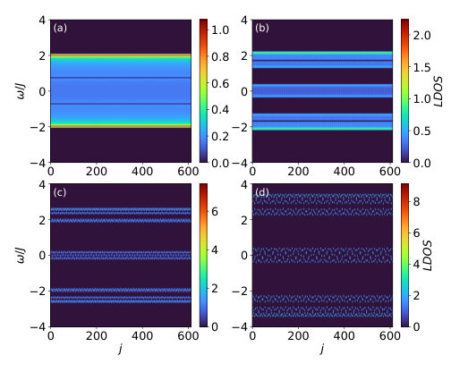
<figcaption class="paper-figure-caption"><b>Fig 4.</b> Figure 2 shows the spatially resolved LDOS 𝜌𝑗(𝜔) as a func- tion of frequency 𝜔and lattice position 𝑗for representative values of the modulation strength 𝑉. In the extended regime, represented by 𝑉= 0.1𝐽and 𝑉= 𝐽in Figs. 2(a) and 2(b), respectively, the LDOS is broadly distributed across the lattice and exhibits comparatively weak spatial variations, consistent with the extended character of the bath eigenmodes. Conse- quently, the local spectral density sampled by the QE varies only weakly with the coupling position 𝑗0, and the resulting QE dynamics are expected to be comparatively insensitive to posi- tion in this regime. Within the extended regime, the LDOS is enhanced near the band...</figcaption>
</figure>
<figure class="paper-figure-card">
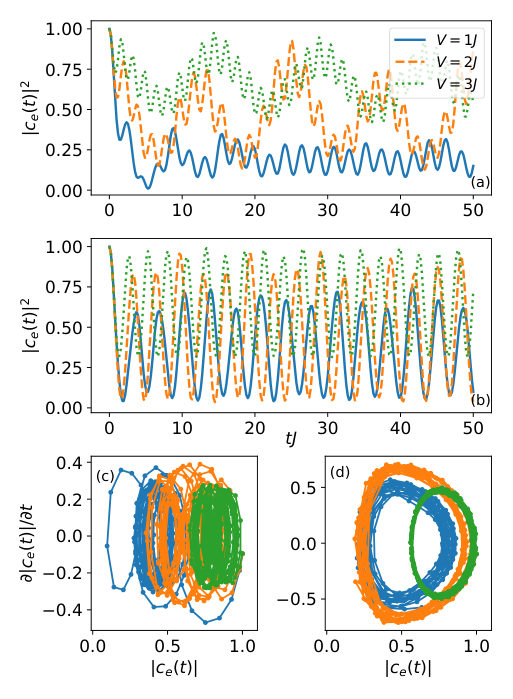
<figcaption class="paper-figure-caption"><b>Fig 5.</b> FIG. 4. QE excited-state dynamics and corresponding phase-plane projections for different AAH modulation strengths and emitter de- tunings. Panels (a) and (b) show the excited-state population |𝑐e(𝑡)|2</figcaption>
</figure>
</div>

<p><strong>Summary.</strong> This paper explores how a quantum emitter coupled to an Aubry-André-Harper photonic lattice exhibits non-Markovian dynamics dictated by the lattice's quasiperiodic structure. By tuning the modulation strength, the system transitions through localization regimes, which fundamentally alters the spectral coupling and leads to the formation of stable emitter-photon bound states. The findings establish a clear theoretical link between quasiperiodic localization physics and complex open quantum dynamics.</p>
<p><strong>Why it may be interesting.</strong> This work directly connects the concepts of quasiperiodic localization (a hallmark of disordered/quasiperiodic systems) with open quantum system dynamics (non-Markovianity), providing a rich platform for studying engineered quantum light-matter interactions.</p>
<details>
<summary>Detailed structure</summary>
<p><strong>Main problem.</strong> The paper investigates how non-Markovian light-matter interactions, influenced by a spectrally structured bath, alter the dynamics of a quantum emitter coupled to a quasiperiodic photonic lattice.</p>
<p><strong>Main result.</strong> The dynamics are strongly controlled by the quasiperiodic modulation, leading to coherent back-action and the formation of emitter-photon bound states, establishing a link between localization and non-Markovian effects.</p>
<p><strong>Method.</strong> The study uses modal analysis in the single-excitation sector, analyzing the time evolution governed by a non-Markovian equation derived from the local density of states (LDOS).</p>
<p><strong>Model / system.</strong> The system consists of a two-level quantum emitter coupled to an Aubry-André-Harper (AAH) photonic lattice. The AAH lattice exhibits a transition from extended to localized regimes via a critical point characterized by multifractal modes.</p>
<p><strong>Key observables.</strong> Excited-state population $|c_e(t)|^2$, local density of states $
ho_j(\omega)$, and the population backflow measure $\chi(T)$.</p>
<p><strong>Important parameters / regimes.</strong> The quasiperiodic modulation strength ($V$), which tunes the system between extended, critical, and localized regimes.</p>
<p><strong>Assumptions / limitations.</strong> The analysis focuses on the coherent single-excitation dynamics, neglecting cavity losses, emitter dephasing, and multilevel structure.</p>
<p><strong>Figures summary.</strong> Figures illustrate the spatial profiles of AAH eigenmodes in different regimes and show the time evolution of photonic population $P_j(t)$ and the recurrence time $T_{rec}$ under varying modulation strengths.</p>
<p><strong>Paper structure.</strong> The paper builds from defining the full Hamiltonian and restricting dynamics to the single-excitation sector. It then analyzes the spectral structure (LDOS) across the AAH transition regimes (extended, critical, localized) to derive the non-Markovian dynamics equation, culminating in the identification of bound states and their physical consequences.</p>
</details>
<details>
<summary>Abstract</summary>
<p>In non-Markovian light-matter interactions, a spectrally structured bath can alter the evolution of a quantum emitter by modifying the vacuum fluctuations experienced by the emitter. This raises the question of how the localization transition and the associated multifractal critical modes induced by a quasiperiodic potential shape the emitter dynamics. We investigate this scenario in the single-excitation sector for a two-level quantum emitter coupled to an Aubry-André-Harper (AAH) photonic lattice. By externally tuning the strength of the quasiperiodic onsite modulation, the lattice is tuned from the extended to the localized regime through a critical point characterized by multifractal modes. Using modal analysis, we show that the quasiperiodic modulation reshapes the local density of states at the coupling site and thereby controls the effective spectral coupling between the emitter and the lattice. The transient dynamics depend strongly on the spatial and spectral overlap between the emitter and the lattice modes: extended modes below the critical modulation generally produce rapid depopulation, whereas critical and localized modes give rise to coherent back-action and persistent Rabi-like oscillations, with particularly pronounced behavior at the critical point. We further identify emitter-photon bound states whose formation is controlled by the quasiperiodic spectral structure of the bath and whose overlap with the initially excited state leads to partial long-time population trapping. These results establish a direct connection between quasiperiodic localization, non-Markovian dynamics, and emitter-photon bound-state formation.</p>
</details>
<p><sub><a href="#top">↑ back to top</a></sub></p>

<p><a id="paper-2610.38690"></a></p>
<h3 id="quantum-observables-of-nonperturbative-superradiant-scattering"><a href="http://arxiv.org/abs/2610.38690v1">Quantum Observables of Nonperturbative Superradiant Scattering</a></h3>
<p><strong>Authors:</strong> Asimina Arvanitaki, Savas Dimopoulos, Marios Galanis, Derek J. Li<br>
<strong>Type:</strong> theory · <strong>Category:</strong> other · <strong>PDF:</strong> <a href="https://arxiv.org/pdf/2610.38690v1">https://arxiv.org/pdf/2610.38690v1</a><br>
<strong>Analysis basis:</strong> full PDF text, analyzed in chunks
<strong>Topic relevance:</strong> <code>Keldysh / 2PI / non-Gaussian methods</code> <strong>3/5</strong> · <code>correlated / nonlocal dissipation</code> <strong>3/5</strong> · <code>quantum measurements</code> <strong>3/5</strong> · <code>Dicke superradiance</code> <strong>2/5</strong> · <code>Full counting statistics</code> <strong>2/5</strong> · <code>driven-dissipative phase transition</code> <strong>2/5</strong> · <code>methods for driven-dissipative</code> <strong>2/5</strong> · <code>non-equilibrium universality</code> <strong>2/5</strong> · <code>Tavis-Cummings &amp; cavity-many-emitter</code> <strong>1/5</strong> · <code>analog quantum simulation</code> <strong>1/5</strong> · <code>superradiant laser</code> <strong>1/5</strong></p>
<div class="figure-strip-hint">↔ Scroll figures horizontally</div>
<div class="paper-figures-scroll">
<figure class="paper-figure-card">
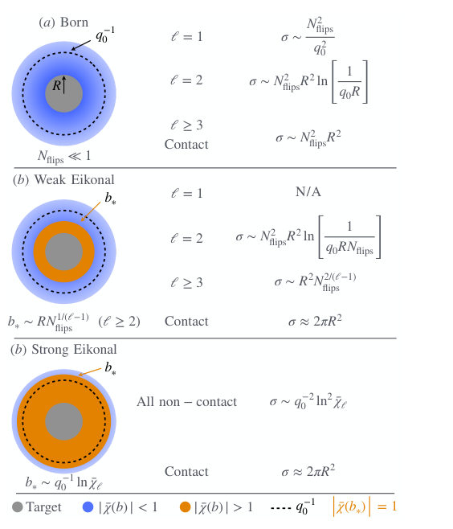
<figcaption class="paper-figure-caption"><b>Fig 1.</b> FIG. 1. Born, weak-eikonal, and strong-eikonal regimes at q0R ≪1, with coupling increasing from top to bottom. Gray denotes the target; orange and blue indicate strong and weak scattering, separated by |¯χ(b∗)| = 1. Scalings apply to Vℓ(r) = V0(R/r)ℓoutside the target, while contact denotes V0Θ(R−r). Born scattering holds at every impact parameter only if Nflips ln[1/(q0R)] ≪1. Only the contact saturation prefactor is retained.</figcaption>
</figure>
<figure class="paper-figure-card">

<figcaption class="paper-figure-caption"><b>Fig 2.</b> Figure 1 summarizes these regimes. Internal degrees of freedom— For operator-valued V±, the scalar eikonal factor becomes a path-ordered ma- trix exponential. Consider a P with spin-1/2 and a con- tact interaction at energy scale Λ</figcaption>
</figure>
<figure class="paper-figure-card">
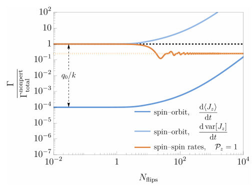
<figcaption class="paper-figure-caption"><b>Fig 3.</b> FIG. 2. Mean energy-transfer and decoherence rates divided by the total interaction rate, for a monoenergetic bath. The total rate is given by Φσtot, where Φ is the flux and the total cross-section is given by Eq. (6). Spin-orbit scattering (blue) permits multiquantum transfer and so Born-like growth with Nflips, while polarized spin-1/2 exchange (orange, Pz = 1) approaches the geometric ratio 1/4. Here q0/k = 10−4 and we terminate the plot at Nflips ∼k/q0, where eikonal approx- imation breaks down.</figcaption>
</figure>
<figure class="paper-figure-card">
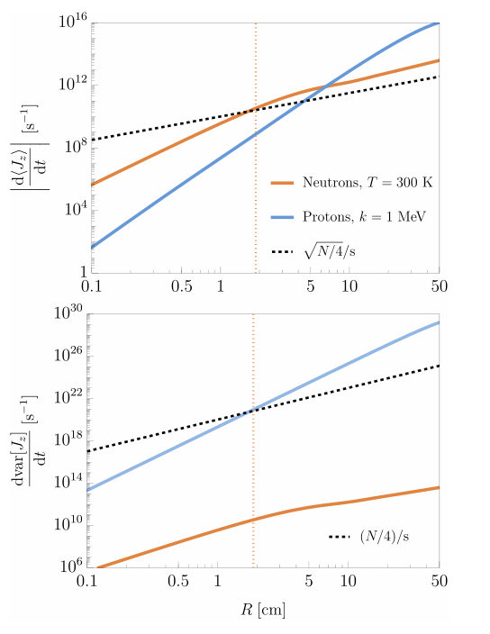
<figcaption class="paper-figure-caption"><b>Fig 4.</b> FIG. 3. Quantum observables for superradiant scattering of thermal neutrons at 300 K (orange) and an axial proton beam at 1 MeV (blue) with a spin-polarized 3He target of radius R in the equatorial product state. The target den- sity is ns = 1020 cm−3, the neutron flux Φ = 1010 cm−2s−1, and the proton flux Φ = 109 cm−2s−1. We assume splittings ω0 = 10−12 eV and 10−10 eV for the neutron and proton plots, respectively, to ensure coherence over all plotted radii R. Top panel: Mean energy transfer. Neutrons deposit en- ergy, while protons absorb. Bottom panel: Variance growth. The black dashed lines correspond to SQL/s, namely p</figcaption>
</figure>
<figure class="paper-figure-card">
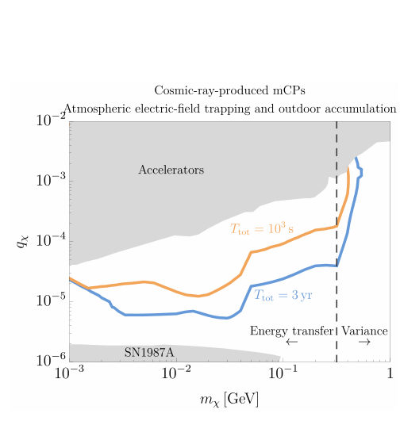
<figcaption class="paper-figure-caption"><b>Fig 5.</b> FIG. 4. Projected mCP reach for the accumulation scenario of Ref. [16], with R = 10 cm, ns = 3 × 1021 cm−3 of 3He, and tcoh = 103 s. Integration times are 103 s (orange) and 3 yr (blue). The variance projection further assumes squeezing 10 log10(ξ−2) ≃48 dB [4], becoming a more sensitive observ- able to the right of the dashed line. Gray regions denote accelerator [17–25] and SN1987A [26] constraints.</figcaption>
</figure>
</div>

<p><strong>Summary.</strong> This paper develops a nonperturbative quantum theory for superradiant scattering from many coupled spins. It calculates key observables like energy transfer and variance rates by extending the eikonal approximation to higher orders. The results provide theoretical tools for designing experiments to search for exotic particles like millicharged relics using polarized beams.</p>
<p><strong>Why it may be interesting.</strong> The rigorous treatment of nonperturbative scattering and the derivation of energy diffusion/variance rates in the presence of strong collective coupling are highly relevant to open quantum systems and quantum detection protocols.</p>
<details>
<summary>Detailed structure</summary>
<p><strong>Main problem.</strong> Developing a nonperturbative theory for superradiant scattering from $N$ coherent spins and analyzing its backreaction on the target system.</p>
<p><strong>Main result.</strong> The theory successfully calculates energy transfer and energy variance rates, showing that spin-orbit interactions allow for multiquantum exchange, while spin-spin interactions limit exchange to single quanta per encounter.</p>
<p><strong>Method.</strong> The analysis employs advanced scattering techniques including the eikonal approximation, Floquet theory, and bosonization to treat spin fluctuations and backreaction dynamics.</p>
<p><strong>Model / system.</strong> The system involves inelastic scattering from $N$ two-level systems (spins) interacting with an incident particle beam. The Hamiltonian describes the coupling, and the dynamics are analyzed in regimes ranging from Born to strong eikonal scattering.</p>
<p><strong>Key observables.</strong> Mean energy transfer ($\langle J_z 
angle$), energy variance ($ ext{var}[J_z]$), and total cross sections ($\sigma_{tot}$).</p>
<p><strong>Important parameters / regimes.</strong> The scaling factor $N^2$ for scattering, the eikonal phase $ar{\chi}(b)$, and the momentum transfer $q_0$.</p>
<p><strong>Assumptions / limitations.</strong> The analysis relies on the eikonal approximation, and initial rate calculations neglect beam attenuation, neutron capture, and heating effects.</p>
<p><strong>Figures summary.</strong> Figures compare initial mean spin-transfer and variance-growth rates for different beam types (thermal neutrons vs. axial protons) and project the reach for millicharged particle searches.</p>
<p><strong>Paper structure.</strong> The paper develops the nonperturbative theory by first establishing the eikonal framework, then calculating the NLO corrections to observables like cross-sections ($\sigma_n$), and finally applying this formalism to calculate time-dependent rates for energy transfer and variance in various physical scenarios (mCP searches, neutron beams).</p>
</details>
<details>
<summary>Abstract</summary>
<p>Inelastic scattering from $N$ coherent spins, or any two-state system, scales as $N^2$, invalidating the Born approximation at large $N$ even at weak coupling. We develop a nonperturbative theory of this superradiant scattering and its backreaction on the spins. Since one particle can exchange many quanta, the target's energy-transfer and energy-variance rates keep their favorable $N^2$ scaling even after the cross section saturates, unless a conservation law limits each encounter to exchange of one quantum. We apply the theory to millicharged-particle searches, as well as neutron and charged-particle beams that can test quantum protocols for detecting cosmic relics.</p>
</details>
<p><sub><a href="#top">↑ back to top</a></sub></p>

<p><a id="paper-2610.40651"></a></p>
<h3 id="renormalization-for-robust-memory-without-synchronization"><a href="http://arxiv.org/abs/2610.40651v1">Renormalization for Robust Memory without Synchronization</a></h3>
<p><strong>Authors:</strong> Shashwat Chakraborty, Jong Yeon Lee<br>
<strong>Type:</strong> theory · <strong>Category:</strong> statistical mechanics · <strong>PDF:</strong> <a href="https://arxiv.org/pdf/2610.40651v1">https://arxiv.org/pdf/2610.40651v1</a><br>
<strong>Analysis basis:</strong> full PDF text, analyzed in chunks
<strong>Topic relevance:</strong> <code>correlated / nonlocal dissipation</code> <strong>3/5</strong> · <code>driven-dissipative phase transition</code> <strong>3/5</strong> · <code>methods for driven-dissipative</code> <strong>3/5</strong> · <code>non-equilibrium universality</code> <strong>3/5</strong> · <code>Keldysh / 2PI / non-Gaussian methods</code> <strong>2/5</strong> · <code>analog quantum simulation</code> <strong>2/5</strong> · <code>quantum measurements</code> <strong>2/5</strong> · <code>scars &amp; prethermalization</code> <strong>2/5</strong></p>
<div class="figure-strip-hint">↔ Scroll figures horizontally</div>
<div class="paper-figures-scroll">
<figure class="paper-figure-card">
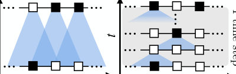
<figcaption class="paper-figure-caption"><b>Fig 1.</b> FIG. 1. Synchronous and asynchronous updates. (a) Under synchronous updates, all sites are updated simultane- ously at each discrete time step. (b) Under asynchronous updates on a system of N sites, each time step is divided into N substeps, and one randomly chosen site is updated at each substep. Thus, each site is updated once on average per time step, although the order and number of updates at individual sites are random. As N →∞, with substep duration 1/N, the update clocks on any fixed finite collection of sites con- verge to independent rate-one Poisson processes.</figcaption>
</figure>
<figure class="paper-figure-card">
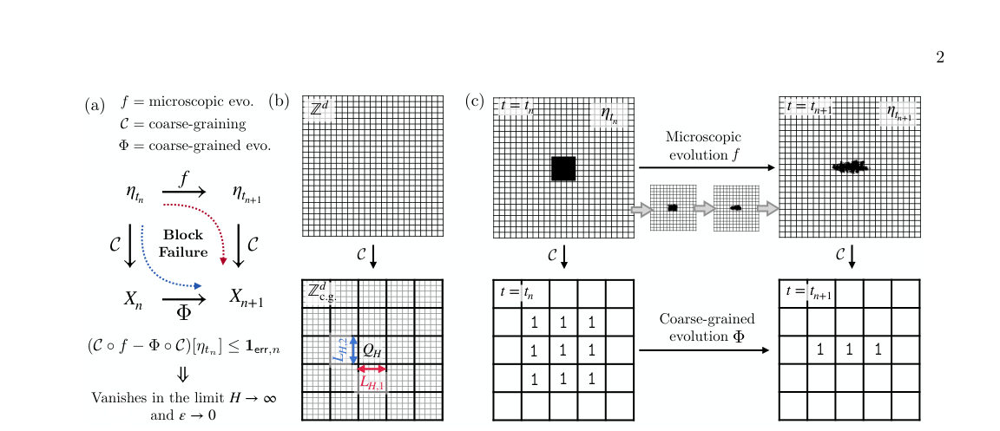
<figcaption class="paper-figure-caption"><b>Fig 2.</b> FIG. 2. Spacetime renormalization argument. (a) For a fixed microscopic update history and in the absence of errorn,z, evolving a state and then coarse-graining is dominated by coarse-graining first and then applying Φ, as stated in Eq. (19). (b) The microscopic lattice is partitioned into congruent, possibly anisotropic boxes QH, which form the coarse-grained lattice. (c) Illustration of the two paths in (a) for the R rule: black squares represent microscopic defects, while 1 denotes a defective coarse cell. The argument is completed by showing that the (one-sided) deviation between two paths (red and blue) is suppressed with the coarse-graining scale. Intuitively, violations of the...</figcaption>
</figure>
<figure class="paper-figure-card">
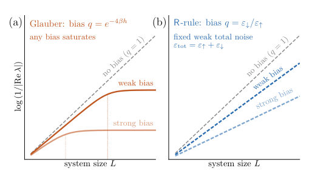
<figcaption class="paper-figure-caption"><b>Fig 3.</b> FIG. 3. Schematic spectral behavior. Schematic depen- dence of the inverse relaxation gap on system size under a bias q = ε↓/ε↑, where ε↑(ε↓) is the error rate attacking the disfavored (favored) phase. (a) Low-temperature Ising. Here the bias is applied via an external field h. At h = 0, the spectral gap decreases exponentially with the linear system size. At any fixed positive field, the gap remains bounded away from zero uniformly in system size. (b) R process. At a fixed, sufficiently small noise strength ε↑+ ε↓, both phases remain stable under arbitrary bias q, exhibiting a memory life-time that grows exponentially in system size [27]. The dashed curves schematically illustrate the...</figcaption>
</figure>
<figure class="paper-figure-card">
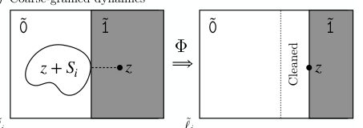
<figcaption class="paper-figure-caption"><b>Fig 4.</b> FIG. 4. (a,b) Geometric conditions for stability. (a) illustrates that a direction ℓis stable if a defect-free half-space cannot be invaded by defects under the noiseless dynamics. (b) shows a balanced family of stable directions ℓ1 = −e∗ 1, ℓ2 = −e∗ 2, and ℓ3 = e∗ 1 + e∗ 2 with positive weights αi = 1 for i ∈{1, 2, 3}, such that P</figcaption>
</figure>
<figure class="paper-figure-card">
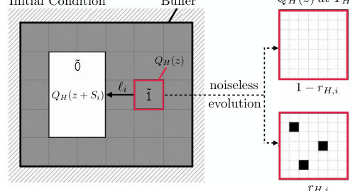
<figcaption class="paper-figure-caption"><b>Fig 5.</b> FIG. 5. Illustration of the noiseless block process. (Left) For a stable direction ℓi, we define the block process to start from the worst-case configuration: the predecessor region QH(z + Si) is clean (˜0), while the rest of the buffer is defective (˜1). All the sites outside the buffer are frozen to 1. (Right) After noiseless continuous-time evolution for a block time TH, the block process for the core cell QH(z) succeeds if every site in the core is clean and fails if at least one defect remains (black squares). These outcomes have probabilities 1 −rH,i and rH,i, respectively.</figcaption>
</figure>
</div>

<p><strong>Summary.</strong> This work introduces a spacetime renormalization framework to analyze memory retention in local systems operating under asynchronous, noisy dynamics. By comparing coarse-grained evolution paths, the authors establish rigorous stability criteria for codes like the R squeezing code. This provides a powerful tool for designing autonomous memory elements sustained by competing local stochastic processes.</p>
<p><strong>Why it may be interesting.</strong> The techniques developed for analyzing memory in asynchronous stochastic dynamics are highly relevant to open quantum systems, particularly those modeled by local Hamiltonians or Lindblad master equations where noise and non-Markovian effects are present.</p>
<details>
<summary>Detailed structure</summary>
<p><strong>Main problem.</strong> The paper addresses the challenge of establishing robust memory in local update systems when the dynamics are subject to random local errors and asynchronous updates, where synchronization assumptions fail.</p>
<p><strong>Main result.</strong> The authors develop a spacetime renormalization framework to prove stability for the asynchronous R squeezing code and introduce robust processes in 2D and 3D, showing memory persistence even when noise favors one phase.</p>
<p><strong>Method.</strong> The core method is a spacetime renormalization framework that compares coarse-grained evolution paths, allowing the derivation of stability criteria for continuous-time Markov processes.</p>
<p><strong>Model / system.</strong> The system is modeled as a cellular automaton on a lattice undergoing continuous-time, asynchronous updates governed by local stochastic rules (e.g., the R squeezing code).</p>
<p><strong>Key observables.</strong> Erosion property, relaxation gap, defect droplet size, and the probability of defect survival.</p>
<p><strong>Important parameters / regimes.</strong> Noise strength ($\epsilon$), system dimension ($d=2, 3$), and the coarse-graining scale ($H$).</p>
<p><strong>Assumptions / limitations.</strong> The analysis relies on showing that the deviation between synchronous and asynchronous evolution paths is suppressed in the large-scale limit.</p>
<p><strong>Figures summary.</strong> Figures illustrate the difference between synchronous and asynchronous updates, and the spacetime renormalization argument comparing two evolution paths.</p>
<p><strong>Paper structure.</strong> The paper progresses from defining the problem of asynchronous stability to developing the renormalization framework, applying it to prove stability for specific codes, and finally analyzing the dimensional dependence of stability (2D vs 3D R process).</p>
</details>
<details>
<summary>Abstract</summary>
<p>Local error correction can preserve classical information against noise, but protection under synchronized updates need not survive when sites evolve at independent random times. Establishing stability is particularly challenging when protection relies on the collective action of competing local rules. Here we develop a spacetime renormalization framework that reveals how independently acting local updates can collectively stabilize memory. We identify sufficient conditions under which the geometry of stable interfaces and suppression of defect propagation produce reliable erosion at large scales. Applying this framework, we prove stability of the asynchronous \textsf{R} squeezing code and introduce robust processes in two and three dimensions. In these systems, both encoded phases persist under sufficiently weak noise, even when the noise favors one phase. Our results provide a criterion for designing autonomous memories sustained by competing local stochastic dynamics.</p>
</details>
<p><sub><a href="#top">↑ back to top</a></sub></p>

<p><a id="paper-2610.39059"></a></p>
<h3 id="fate-of-quantum-magic"><a href="http://arxiv.org/abs/2610.39059v1">Fate of Quantum Magic</a></h3>
<p><strong>Authors:</strong> Liuke Lyu, Erik S. Sørensen, William Witczak-Krempa<br>
<strong>Type:</strong> theory · <strong>Category:</strong> statistical mechanics · <strong>PDF:</strong> <a href="https://arxiv.org/pdf/2610.39059v1">https://arxiv.org/pdf/2610.39059v1</a><br>
<strong>Analysis basis:</strong> full PDF text, analyzed in chunks
<strong>Topic relevance:</strong> <code>analog quantum simulation</code> <strong>3/5</strong> · <code>correlated / nonlocal dissipation</code> <strong>3/5</strong> · <code>methods for driven-dissipative</code> <strong>3/5</strong> · <code>non-equilibrium universality</code> <strong>3/5</strong> · <code>Keldysh / 2PI / non-Gaussian methods</code> <strong>2/5</strong> · <code>driven-dissipative phase transition</code> <strong>2/5</strong> · <code>scars &amp; prethermalization</code> <strong>2/5</strong> · <code>quantum measurements</code> <strong>1/5</strong></p>
<div class="figure-strip-hint">↔ Scroll figures horizontally</div>
<div class="paper-figures-scroll">
<figure class="paper-figure-card">
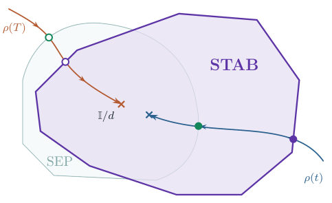
<figcaption class="paper-figure-caption"><b>Fig 1.</b> FIG. 1. Set of stabilizer states without magic (STAB), and the set without entanglement (SEP). Typical late-stage thermal (T) and temporal (t) evolutions are shown in red and blue, respectively. STAB-first entry is the typical case. The infinite-temperature maximally mixed state is I/d.</figcaption>
</figure>
<figure class="paper-figure-card">
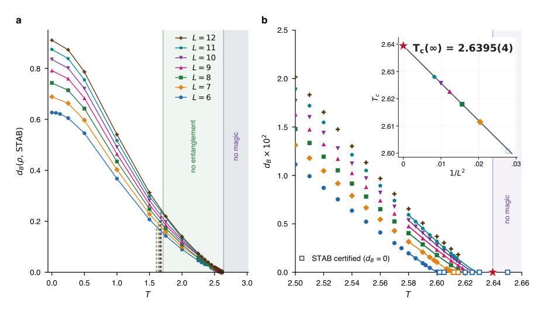
<figcaption class="paper-figure-caption"><b>Fig 2.</b> FIG. 2. Finite temperature evolution of magic in subregions of L sites in the infinite transverse field Ising model as measured by the Bures distances to STAB. a) Full temperature range. The vertical dashed lines denote the full-PPT temperatures for each L. b) Near-death scaling with cubic fits dB = ax + bx2 + cx3, where x = Tc −T. L = 12 is not fitted due to looser convergence near threshold. Inset: extrapolation of Tc to the thermodynamic limit.</figcaption>
</figure>
<figure class="paper-figure-card">
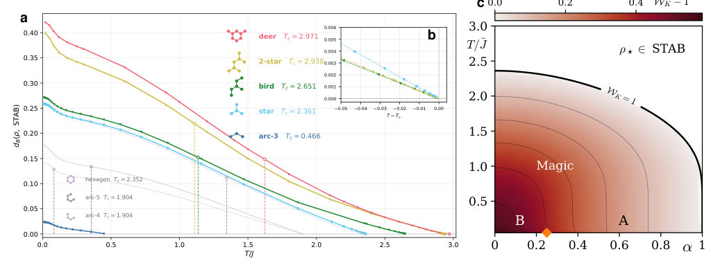
<figcaption class="paper-figure-caption"><b>Fig 3.</b> FIG. 3. a Thermal evolution of magic in the isotropic Kitaev honeycomb model for various subregions of a 32-site torus, up to 8 sites. The coloured subregions are the ones that have the most resilient magic against temperature for a given number of spins. b Inset: near-death scaling of magic. c The magic witness WK of the four-site star over the anisotropy–T plane going from the B-phase (gapless) to the A-phase (gapped), Jz = 1 + 2α, Jx = Jy = 1 −α. ¯J is the average coupling. : αc = 1/4 at T = 0. From the Gibbs state of a 24-site torus. At α = 0 the critical Tc for WK is Tc = 2.361 in agreement with a.</figcaption>
</figure>
<figure class="paper-figure-card">
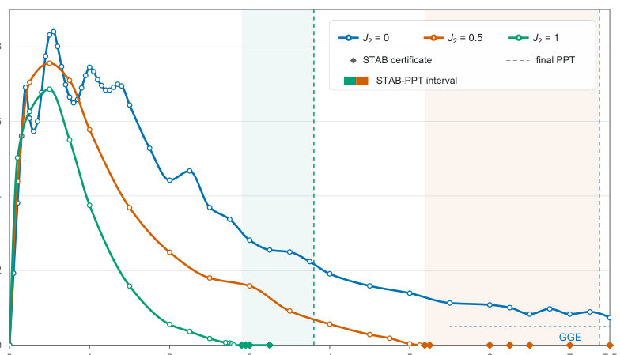
<figcaption class="paper-figure-caption"><b>Fig 4.</b> FIG. 4. Dynamical fate of magic for quantum quenches in the Ising +J2 spin chain; 6-site subregions are studied. The initial condition is a dimer cover of nearest-neighbour Bell states. For the integrable case J2 = 0, we work in the thermodynamic limit, whereas we use N = 24 for finite J2.</figcaption>
</figure>
<figure class="paper-figure-card">
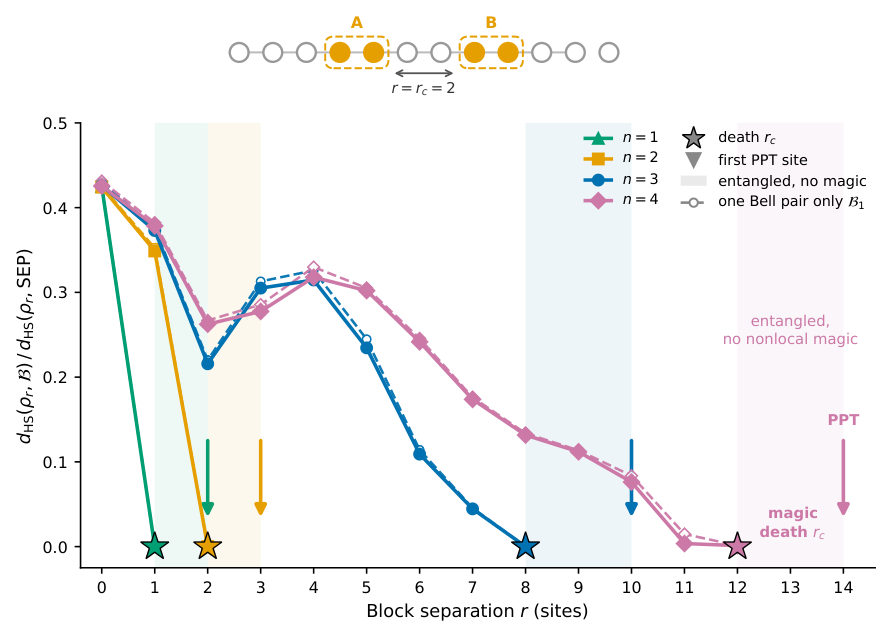
<figcaption class="paper-figure-caption"><b>Fig 5.</b> FIG. 5. Death of genuine bipartite magic versus separation as measured with respect to the Bell producible hull, dHS(ρr,B); dHS is the Hilbert-Schmidt distance. We normalise with respect to the distance to the set without bipartite entanglement, d(ρr,SEP). The arrows denote the death of bipartite entanglement.</figcaption>
</figure>
</div>

<p><strong>Summary.</strong> This work introduces and rigorously studies 'quantum magic,' a resource quantifying deviation from classically describable stabilizer states. The authors analyze how this resource decays in various physical settings, including thermalization and quantum quenches, using advanced mathematical tools. The findings reveal distinct decay pathways, providing new insights into the hierarchy of quantum correlations in condensed matter systems.</p>
<p><strong>Why it may be interesting.</strong> It provides a quantitative, resource-theoretic understanding of how different quantum correlations decay in realistic, interacting many-body systems, which is crucial for understanding quantum information storage in physical materials.</p>
<details>
<summary>Detailed structure</summary>
<p><strong>Main problem.</strong> The paper investigates the fate (decay) of 'quantum magic,' a quantum resource distinct from entanglement, under thermal and dynamical evolution, and with spatial separation.</p>
<p><strong>Main result.</strong> The decay dynamics depend on the process: thermal evolution shows a sudden death of magic occurring after entanglement death in some models, while quenches typically cause magic to die before entanglement.</p>
<p><strong>Method.</strong> The authors develop and apply a framework using the Bures distance to quantify magic, employing advanced algorithms like SOFA for mixed states and analyzing resource decay across different physical trajectories.</p>
<p><strong>Model / system.</strong> The study analyzes generic many-body quantum systems, including the Transverse Field Ising Model (TFIM), generic spin chains, and the Kitaev quantum spin liquid on the honeycomb lattice.</p>
<p><strong>Key observables.</strong> Magic (measured by Bures distance to stabilizer states), Entanglement (tracked via PPT), Quantum Fisher Information (QFI), and various witnesses ($\Delta_{XZ}, \Delta_2$).</p>
<p><strong>Important parameters / regimes.</strong> Temperature ($T$), time ($t$), system size ($L$), and preparation tolerance ($\epsilon$).</p>
<p><strong>Assumptions / limitations.</strong> The Bures distance is used as a faithful mixed-state magic monotone, and the analysis relies on rigorous bounds derived from quantum information theory.</p>
<p><strong>Figures summary.</strong> Figures illustrate the geometric relationship between stabilizer states (STAB) and other sets, showing how different evolution paths (thermal vs. temporal) intersect these boundaries.</p>
<p><strong>Paper structure.</strong> The paper systematically introduces magic as a resource, develops tools to quantify it, and then applies these tools to analyze its decay under three distinct physical scenarios: thermal equilibrium, quantum quenches, and spatial separation.</p>
</details>
<details>
<summary>Abstract</summary>
<p>Magic, a quantum resource distinct from entanglement, measures departure from states stabilized by products of Pauli operators. Such stabilizer states can be maximally entangled yet admit efficient classical description: quantum advantage requires magic. We develop a powerful framework to evaluate the degree of magic in generic many-body states. We use it to study the fate of magic under thermal and dynamical evolution. In the transverse field Ising model, we find a thermal sudden death of magic that saturates with system size, and occurs after the death of entanglement. We reach similar conclusions in generic spin chains, and in the Kitaev quantum spin liquid on the honeycomb lattice, where the threshold shows an intricate dependence on subregion shape. We then study how magic equilibrates after a quantum quench. In quenches of generic spin chains, the magic of a subregion typically dies before entanglement, contrary to thermal trajectories. An explanation is given in terms of the geometry of non-magical states. As a third type of trajectory, we examine the fate of magic with separation with an appropriate notion of non-local magic and establish a sudden death. Finally, we show how to experimentally witness a volume law of frame-robust magic in quantum materials by using neutron scattering.</p>
</details>
<p><sub><a href="#top">↑ back to top</a></sub></p>

<p><a id="paper-2610.39436"></a></p>
<h3 id="hop-rates-of-h-and-d-on-pt111-at-finite-coverage-the-memory-equation-and-the-collective-friction"><a href="http://arxiv.org/abs/2610.39436v1">Hop rates of H and D on Pt(111) at finite coverage: the memory equation and the collective friction</a></h3>
<p><strong>Authors:</strong> S. Miret-Artés<br>
<strong>Type:</strong> both · <strong>Category:</strong> statistical mechanics · <strong>PDF:</strong> <a href="https://arxiv.org/pdf/2610.39436v1">https://arxiv.org/pdf/2610.39436v1</a><br>
<strong>Analysis basis:</strong> full PDF text, analyzed in chunks
<strong>Topic relevance:</strong> <code>Frenkel-Kontorova</code> <strong>3/5</strong> · <code>correlated / nonlocal dissipation</code> <strong>3/5</strong> · <code>methods for driven-dissipative</code> <strong>3/5</strong> · <code>Keldysh / 2PI / non-Gaussian methods</code> <strong>2/5</strong> · <code>driven-dissipative phase transition</code> <strong>2/5</strong> · <code>quantum measurements</code> <strong>2/5</strong> · <code>analog quantum simulation</code> <strong>1/5</strong> · <code>non-equilibrium universality</code> <strong>1/5</strong> · <code>scars &amp; prethermalization</code> <strong>1/5</strong></p>
<div class="figure-strip-hint">↔ Scroll figures horizontally</div>
<div class="paper-figures-scroll">
<figure class="paper-figure-card">
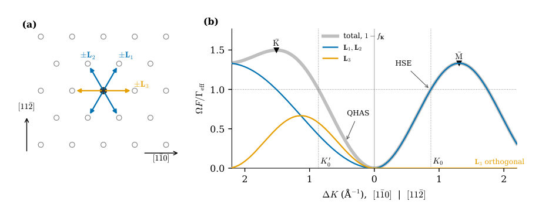
<figcaption class="paper-figure-caption"><b>Fig 1.</b> Figure 1: Direction of the momentum transfer on Pt(111). (a) fcc sites (circles), the jump vectors ±L1, ±L2 (blue) and ±L3 (orange), and the azimuths [11¯2] and [1¯10]. (b) Right-hand side of the sum rule (11) in units of Γeff on [1¯10] (left) and [11¯2] (right). Shown are the contributions of L1, L2 (blue) and L3 (orange) and the total 1 −fK (grey). Dotted lines mark the nodes K0, K′ 0 of fK, where the total equals one. ¯M and ¯K are zone-boundary points. Arrows mark the momentum transfers of the QHAS measurements of Ref. [1] and the HSE measurements of Ref. [2]. All curves are calculated from the lattice geometry. Nothing is fitted.</figcaption>
</figure>
<figure class="paper-figure-card">
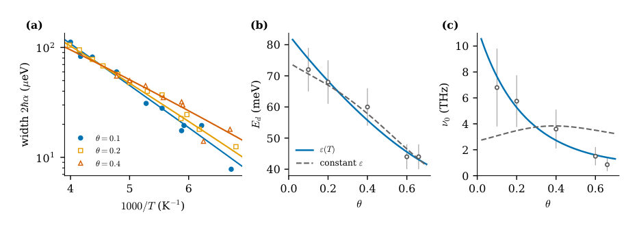
<figcaption class="paper-figure-caption"><b>Fig 2.</b> Figure 2: The lattice gas against the QHAS coverage series of Ref. [1], at 0.44 ˚A−1 on [1¯10]. (a) Measured widths ΓQHAS = 2ℏα at θ = 0.1, 0.2 and 0.4 (symbols), digitized without error bars, and calculated widths for the temperature-dependent coupling (lines). (b) Activation energy Ed and (c) prefactor ν0 of Arrhenius fits between 130 and 250 K. Circles are the published values of Ref. [1], obtained from the measured widths, with their error bars. Lines are the same fits of the calculated widths, for ε(T) with ep = 9.5 meV and T ∗= 222 K (solid) and for the constant coupling ε = −8.6 meV (dashed). The calculated widths are obtained from (11), (20), (23) and (27). Fitted are the two...</figcaption>
</figure>
<figure class="paper-figure-card">
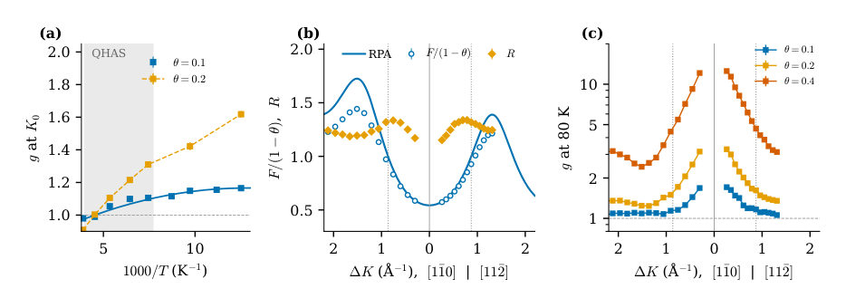
<figcaption class="paper-figure-caption"><b>Fig 3.</b> Figure 3: Interaction factor below the QHAS range. (a) Value g0 of the interaction factor at the node K0 of [11¯2] against 1000/T, at θ = 0.1 (blue) and 0.2 (orange). (b) SSF divided by 1 −θ (circles and line) and R = Ωτc (diamonds) against K at 80 K and θ = 0.2, on [1¯10] (left) and [11¯2] (right). (c) Interaction factor g(K) against K at 80 K for θ = 0.1, 0.2 and 0.4. All symbols are simulated by KMC, with the reduced coupling given at each temperature by the coupling ε(T) fitted in Sec. 5.2. In (a) the line is a quadratic fit in βε to the simulated points at θ = 0.1, and the shaded band is the QHAS range. In (b) the circles are the simulated ISF at t = 0. The diamonds combine Ω, from the...</figcaption>
</figure>
<figure class="paper-figure-card">
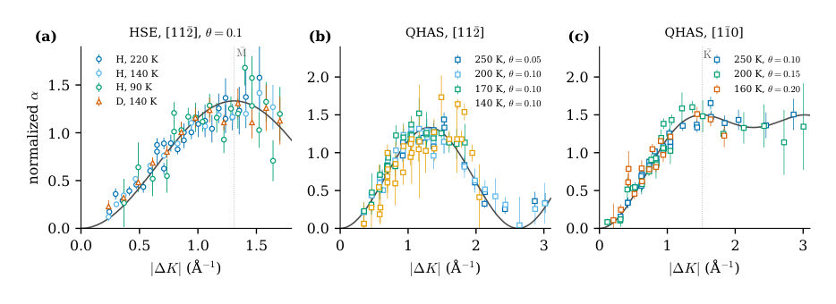
<figcaption class="paper-figure-caption"><b>Fig 4.</b> Figure 4: Momentum-resolved dephasing rates of H and D on Pt(111), divided by the height of the Chudley–Elliott form fitted to each curve. (a) HSE on [11¯2] at 0.1 ML [2]. (b) QHAS on [11¯2] [1]. (c) QHAS on [1¯10] [1]. The temperatures and coverages are given in the legends and in Table 2. Lines show the ideal-layer shape 1 −fK, calculated from the lattice geometry. Dotted lines mark the zone-boundary points ¯M and ¯K. Symbols are measured and digitized. Error bars are the published bars, digitized and divided by ¯α. The only fitted quantity is ¯α of each curve. No simulation enters this figure.</figcaption>
</figure>
<figure class="paper-figure-card">
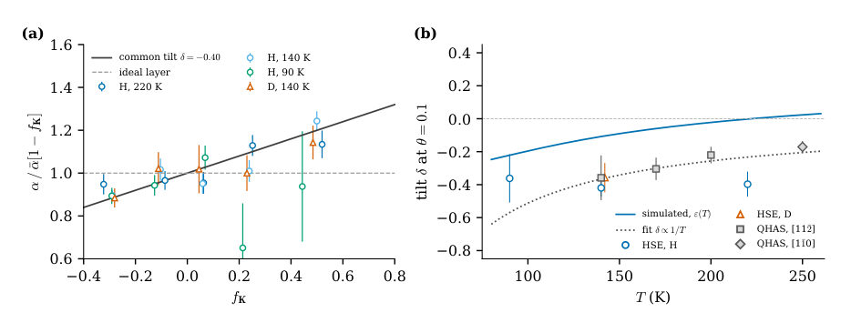
<figcaption class="paper-figure-caption"><b>Fig 5.</b> Figure 5: Shape of the measured dephasing rate at 0.1 ML for H and D. (a) Ratio of the measured HSE rate α to the Chudley–Elliott form ¯α[1 −fK] against fK on [11¯2], for H at 220, 140 and 90 K and D at 140 K [2]. Each symbol is the weighted mean of the measured ratios in a bin of fK, and the symbols of different curves are shifted slightly in fK for clarity. Points with 1 −fK &lt; 0.25 are omitted. (b) Tilt δ against temperature at 0.1 ML, for the HSE curves of H (circles) and D (triangle) and the QHAS curves of H on [11¯2] (squares) and [1¯10] (diamond). In (a) the solid line is the common tilt δ = −0.40, the weighted mean of the tilts of the four measured curves, and the dashed line is the...</figcaption>
</figure>
</div>

<p><strong>Summary.</strong> This work analyzes the diffusion of H and D on Pt(111) using Helium scattering data interpreted through the memory equation. By modeling the adlayer's collective friction, the authors successfully decouple the adlayer effects from the single-adsorbate hopping process. This allows them to determine the substrate's intrinsic friction, independent of the adlayer coverage.</p>
<p><strong>Why it may be interesting.</strong> The use of the memory equation to model collective dynamics and extract intrinsic single-particle rates is highly relevant to open quantum systems and many-body dynamics, providing a framework to decouple local quantum processes from environmental coupling.</p>
<details>
<summary>Detailed structure</summary>
<p><strong>Main problem.</strong> To analyze the hop rates of H and D on Pt(111) at finite coverage by interpreting the coherent intermediate scattering function (ISF) measured via Helium scattering.</p>
<p><strong>Main result.</strong> The extracted single-adsorbate hop rates yield the substrate friction ($124$ and $75 	ext{ ps}^{-1}$ for H and D, respectively), which is found to be independent of the adlayer coverage.</p>
<p><strong>Method.</strong> The analysis employs the memory equation, which describes the decay of the ISF, allowing the separation of single-adsorbate dynamics from the collective friction exerted by the adlayer.</p>
<p><strong>Model / system.</strong> The system is an adlayer of H or D atoms on a Pt(111) surface, modeled as a lattice gas whose dynamics are governed by the memory equation and analyzed using concepts like collective friction and lateral coupling.</p>
<p><strong>Key observables.</strong> Dephasing rate, interaction factor ($g$), tilt (deformation from Chudley–Elliott form), and the collective friction (memory function).</p>
<p><strong>Important parameters / regimes.</strong> Coverage ($ heta$), Temperature ($T$), and the substrate friction values ($124, 75 	ext{ ps}^{-1}$).</p>
<p><strong>Assumptions / limitations.</strong> The analysis assumes the memory equation holds for detailed balance, and the single-adsorbate hop rate is extracted by dividing the measured rate by an interaction factor $g$.</p>
<p><strong>Figures summary.</strong> The notes do not provide a summary of figures, but mention analyzing coverage series, momentum-resolved curves, and fitting the law $\delta \propto 1/T$ to measured tilts.</p>
<p><strong>Paper structure.</strong> The paper progresses by introducing the ISF measurement, applying the memory equation to model adlayer dynamics, separating the single-adsorbate rate using an interaction factor, and finally extracting the substrate friction by analyzing the coverage dependence.</p>
</details>
<details>
<summary>Abstract</summary>
<p>Helium scattering measures the coherent intermediate scattering function of an adlayer, the characteristic function of the separation between adparticles at two times. Published dephasing rates of H and D on Pt(111) are analysed with its memory equation and a nearest-neighbour Ising lattice gas. The measured rate belongs to the adlayer. The hop rate of a single adsorbate is extracted from it by dividing out an interaction factor, without a model of the barrier. This factor lies between $0.97$ and $1.17$ at $0.1$~ML, so that the published single-adsorbate analyses hold there. At $0.4$~ML and $80$~K it lies between $1.2$ and $4.7$, depending on how the occupied neighbours modify a tunnelling jump. The memory function is interpreted as a friction, the collective friction, which the adlayer exerts on its own density fluctuations. The lateral coupling, fixed by the coverage series, is the free energy of a neighbouring pair, with a vibrational pair entropy. The small deformation of the measured curves from the Chudley--Elliott form, the tilt, is proposed as an observable of the coupling. The tilts at $0.15$ and $0.2$~ML are consistent with it, although they are hard to extract from the published curves. The memory equation provides a transition-state theory for the adlayer, with the collective friction in the role of the friction of the substrate and without divergence at the crossover. Combined with the standard quantum transition-state theory of a single adsorbate, the extracted hop rates give the friction of the substrate, $124$ and $75$~ps$^{-1}$ for H and D, independent of the coverage.</p>
</details>
<p><sub><a href="#top">↑ back to top</a></sub></p>

<p><a id="paper-2610.40098"></a></p>
<h3 id="single-atom-billiards-in-an-ultracold-bath-with-energy-tunable-collisions-and-threshold-sensitive-detection"><a href="http://arxiv.org/abs/2610.40098v1">Single-atom billiards in an ultracold bath with energy-tunable collisions and threshold-sensitive detection</a></h3>
<p><strong>Authors:</strong> Silvia Hiebel, Sabrina Burgardt, Julian Feß, Artur Widera<br>
<strong>Type:</strong> experiment · <strong>Category:</strong> other · <strong>PDF:</strong> <a href="https://arxiv.org/pdf/2610.40098v1">https://arxiv.org/pdf/2610.40098v1</a><br>
<strong>Analysis basis:</strong> full PDF text, analyzed in chunks
<strong>Topic relevance:</strong> <code>analog quantum simulation</code> <strong>3/5</strong> · <code>driven-dissipative phase transition</code> <strong>3/5</strong> · <code>non-equilibrium universality</code> <strong>3/5</strong> · <code>correlated / nonlocal dissipation</code> <strong>2/5</strong> · <code>methods for driven-dissipative</code> <strong>2/5</strong> · <code>quantum measurements</code> <strong>2/5</strong> · <code>Frenkel-Kontorova</code> <strong>1/5</strong> · <code>Keldysh / 2PI / non-Gaussian methods</code> <strong>1/5</strong> · <code>scars &amp; prethermalization</code> <strong>1/5</strong></p>
<div class="figure-strip-hint">↔ Scroll figures horizontally</div>
<div class="paper-figures-scroll">
<figure class="paper-figure-card">
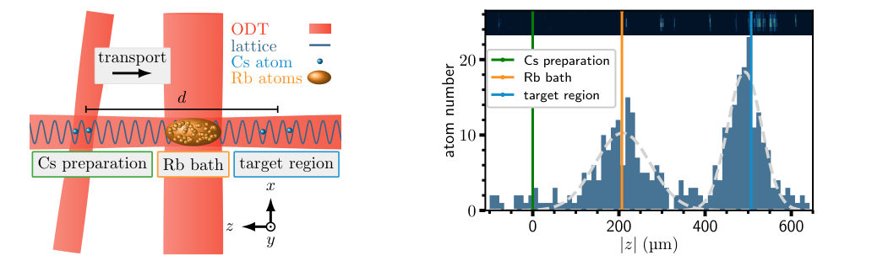
<figcaption class="paper-figure-caption"><b>Fig 1.</b> FIG. 1: Experimental setup and data evaluation. a) Sketch of the experimental setup. The Rb cloud and the individual Cs atoms are initially prepared in spatially separated regions. Both species are confined radially by a common dipole-trap beam propagating along the z direction. Following the preparation stage, the Cs atoms are loaded into a one-dimensional optical lattice, which enables their controlled transport along the shared dipole trap into or beyond the Rb cloud. b) Exemplary histogram showing the summed Cs atom positions along the z direction for 12 individual measurement runs. The colored vertical lines indicate the centers of the corresponding regions: green line: Cs preparation...</figcaption>
</figure>
<figure class="paper-figure-card">
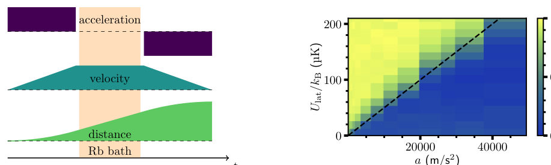
<figcaption class="paper-figure-caption"><b>Fig 2.</b> FIG. 2: Cs atom transport in the one-dimensional lattice. a) Lattice motion during transport. The purple graph shows the acceleration during transport, the teal graph shows the velocity, and the light green curve shows the corresponding distance traveled. The orange background indicates when the atoms traverse the Rb bath. b) Transport efficiency of the Cs atoms without additional Rb bath as a function of lattice depth and acceleration. The black dashed line indicates Ulat/kB = sa, with s = 5 × 10−3 µK s2 m−1 and shows the boundary between locked and running behavior.</figcaption>
</figure>
<figure class="paper-figure-card">
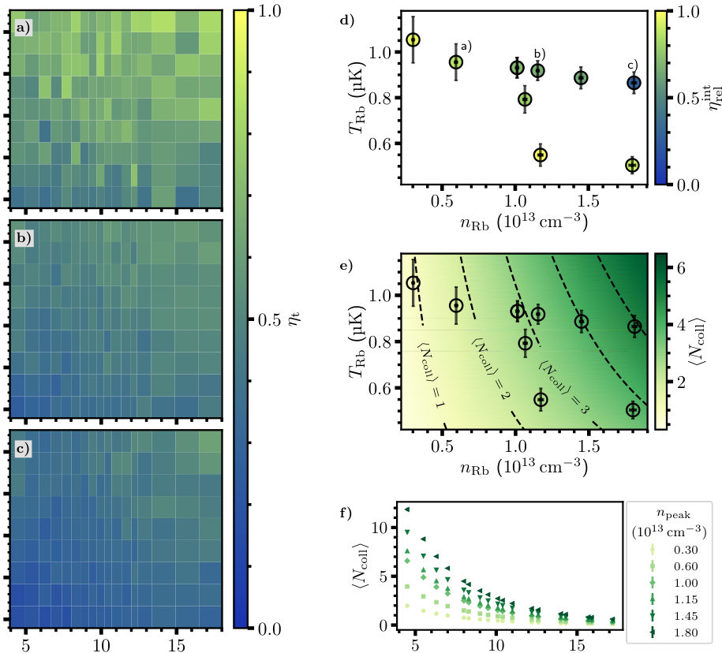
<figcaption class="paper-figure-caption"><b>Fig 3.</b> FIG. 3: Transport efficiency for different bath parameters. a) Low-density: T = 955 ± 16 nK, n = 0.60 ± 0.07 × 1013 cm−3. b) Intermediate-density: T = 918 ± 40 nK, n = 1.55 ± 0.06 × 1013 cm−3. c) High-density: T = 906 ± 40 nK, n = 1.80 ± 0.05 × 1013 cm−3. The displayed results are averages over 15 repetitions for each data point. d) Integrated transport efficiency relative to the efficiency without the Rb bath. The labels indicate the assignment of panels a)-c). e) Maximum average number of collisions for different bath parameters at a velocity of 7 cm s−1. The black circles indicate the positions of the measurement data from d). The dashed lines indicate contour lines for ⟨Ncoll⟩= 1 −5....</figcaption>
</figure>
<figure class="paper-figure-card">
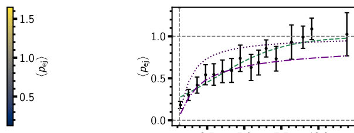
<figcaption class="paper-figure-caption"><b>Fig 4.</b> FIG. 4: Ejection probability as a function of collision energy and lattice depth. a) Mean ejection probability ⟨pej⟩as a function of Ulat/kB and ⟨Ecoll⟩. b) Mean ejection probability as a function of the dimensionless ratio ⟨Ecoll⟩/Ulat. The error bars denote the standard deviation of the contributing data points. For a monoenergetic collision and an initially stationary Cs atom, the vertical dashed line at Ecoll/Ulat = 1/1.58 gives minimum collision energy for which direct ejection is kinematically possible and serves as a kinematic reference. The experiment involves finite collision-energy and initial motional distributions as well as subsequent dynamics in the moving lattice potential....</figcaption>
</figure>
<figure class="paper-figure-card">

<figcaption class="paper-figure-caption"><b>Fig 5.</b> FIG. 5: Influence of the transport lattice on the Rb cloud for different lattice depths and velocities. Each column shows results for one lattice velocity, while the rows represent two different lattice depths (given in units of temperature). The column density is reduced as the lattice depth increases. For a lattice depth of Ulat/kB = 38 µK, the cloud densities are visibly reduced, and their profile is elongated in the z-direction.</figcaption>
</figure>
</div>

<p><strong>Summary.</strong> This experiment uses ultracold atoms to create an energy-tunable single-atom collider, sending Cesium atoms through a Rubidium bath within an optical lattice. By precisely controlling the collision energy relative to the lattice confinement, the researchers demonstrate that transport disruption is governed by individual, discrete scattering events rather than continuous drag forces. This offers a controlled link between microscopic scattering physics and emergent dissipative transport.</p>
<p><strong>Why it may be interesting.</strong> This work provides a highly controllable, quantum-mechanical platform to study non-equilibrium transport and dissipation, directly linking single-particle scattering events to macroscopic transport properties, which is crucial for understanding open quantum systems.</p>
<details>
<summary>Detailed structure</summary>
<p><strong>Main problem.</strong> The study investigates transport processes at the microscopic scale, particularly when the environment is an unordered thermal medium, where individual scattering events dictate the outcome.</p>
<p><strong>Main result.</strong> The experiment successfully converts microscopic collisional energy transfer into a binary single-atom observable, showing that the ejection probability rises sharply as collision energy exceeds the lattice confinement scale.</p>
<p><strong>Method.</strong> The researchers use an energy-tunable single-atom collider by transporting individual Cesium atoms through an ultracold Rubidium bath, measuring transport efficiency.</p>
<p><strong>Model / system.</strong> The system involves transporting single Cs atoms in a shallow 1D optical lattice through a controlled Rb bath. The lattice depth and constant velocity are used to tune the collision energy and set an energy threshold for transport disruption.</p>
<p><strong>Key observables.</strong> Transport efficiency ($\eta_t$), single-collision ejection probability ($\langle p_{	ext{ej}} 
angle$), and mean free path ($\ell$).</p>
<p><strong>Important parameters / regimes.</strong> Lattice depth ($U_{	ext{lat}}$), bath density ($n_{	ext{Rb}}$), bath temperature ($T$), and the ratio of collision energy to lattice confinement scale ($\langle E_{	ext{coll}} 
angle / U_{	ext{lat}}$).</p>
<p><strong>Assumptions / limitations.</strong> The analysis assumes the ability to independently control the collision event number and collision energy, and that the transport is governed by few, discrete collisions.</p>
<p><strong>Figures summary.</strong> Figures illustrate the experimental setup, histograms of atom positions, and plots showing transport efficiency ($\eta_t$) dependence on lattice depth and collision energy ratios, alongside calculations of the mean free path ($\ell$).</p>
<p><strong>Paper structure.</strong> The paper details the experimental setup, measures transport efficiency by varying bath parameters, and then focuses on analyzing the single-collision ejection probability by tuning the collision energy relative to the lattice confinement energy.</p>
</details>
<details>
<summary>Abstract</summary>
<p>Transport processes at the microscopic scale can differ strongly from their macroscopic counterparts, particularly when the environment is not a well-defined surface but an unordered thermal medium. Ultracold quantum gases offer a high degree of controllability and directly observable dynamics, thereby providing a versatile platform to study such transport processes under precisely controllable conditions. Here, we realize an energy-tunable single-atom collider by transporting individual cesium atoms at controlled velocity through an ultracold rubidium bath. The constant lattice velocity sets the directed contribution to the collision-energy distribution, while the lattice depth provides a tunable energy threshold for collision-induced transport disruption. By independently varying these parameters together with bath density and temperature, we separate the number of collision events from their probability to disrupt transport. Across a regime with only a few expected collisions per passage, the inferred single-collision ejection probability rises from small values to near unity as the collision energy exceeds the lattice confinement scale. The experiment thus converts microscopic collisional energy transfer into a binary single-atom observable and provides a controlled link between individual scattering events and emergent dissipative transport.</p>
</details>
<p><sub><a href="#top">↑ back to top</a></sub></p>

<p><a id="paper-2610.38805"></a></p>
<h3 id="spectrum-of-the-steady-state-distribution-function-of-disordered-lindbladian-fermions-at-large-channel-number"><a href="http://arxiv.org/abs/2610.38805v1">Spectrum of the steady-state distribution function of disordered Lindbladian fermions at large channel number</a></h3>
<p><strong>Authors:</strong> Maksim Parfenov, Igor Burmistrov<br>
<strong>Type:</strong> theory · <strong>Category:</strong> disordered systems and neural networks · <strong>PDF:</strong> <a href="https://arxiv.org/pdf/2610.38805v1">https://arxiv.org/pdf/2610.38805v1</a><br>
<strong>Analysis basis:</strong> full PDF text, analyzed in chunks
<strong>Topic relevance:</strong> <code>correlated / nonlocal dissipation</code> <strong>3/5</strong> · <code>driven-dissipative phase transition</code> <strong>3/5</strong> · <code>methods for driven-dissipative</code> <strong>3/5</strong> · <code>non-equilibrium universality</code> <strong>3/5</strong> · <code>Keldysh / 2PI / non-Gaussian methods</code> <strong>2/5</strong> · <code>Full counting statistics</code> <strong>1/5</strong> · <code>analog quantum simulation</code> <strong>1/5</strong> · <code>quantum measurements</code> <strong>1/5</strong> · <code>scars &amp; prethermalization</code> <strong>1/5</strong></p>
<div class="figure-strip-hint">↔ Scroll figures horizontally</div>
<div class="paper-figures-scroll">
<figure class="paper-figure-card">

<figcaption class="paper-figure-caption"><b>Fig 1.</b> Figure 2: Eigenvalues of H = H0 −iQ for the GUE H0 (points) and the boundary (13) (black line). In (a) and (b) the vertical axis is broken: the upper strip shows the piece next to the real axis, which is thinner than a line on the scale of the full cloud. (a) Three pieces at m = 0.07, γ = 1.7, ˜γ = 0.5 (N = 400, 12 realisations). (b) Two pieces at m = 0.1, γ = ˜γ = 3 (N = 400, 12 realisations). (c) One piece at m = 1.5, γ = 1, ˜γ = 0.3 (N = 300, 30 realisations). (d) One piece at m = 20, γ = 1.5, ˜γ = 0.5 (N = 300, 10 realisations), together with the elliptic law (15) (red, dashed).</figcaption>
</figure>
<figure class="paper-figure-card">

<figcaption class="paper-figure-caption"><b>Fig 2.</b> Figure 3: Validity of the leading order and the width. (a) Difference ∆βj be- tween the sorted eigenvalues of the exact Hst and of β0 + Y , Eq. (20), for one realisation (N = 400, m = 40, γ = 1.5, ˜γ = 0.5), in units of the width σβ = p</figcaption>
</figure>
<figure class="paper-figure-card">

<figcaption class="paper-figure-caption"><b>Fig 3.</b> Figure 4: Only the density of states matters. (a) Spacings of the unfolded levels in the bulk of four Hamiltonians with the same semicircular ν but different level statistics, N = 800. Dashed: Wigner surmises and the Poisson law. The rigid levels have all spacings equal to one. (b) ϱst from exact solutions of the Lyapunov equation (11) for the same four Hamiltonians (N = 800, m = 20, s = 2, γ/˜γ = 3), against the vector Dyson equation (37) (red, dashed).</figcaption>
</figure>
<figure class="paper-figure-card">

<figcaption class="paper-figure-caption"><b>Fig 4.</b> Figure 5: The limiting laws in their regimes, at m = 20. (a) s = 32 (γ = 24, ˜γ = 8, N = 600, 5 realisations) against the semicircle (42). (b) s = 0.02 (γ = 0.015, ˜γ = 0.005, N = 800, 4 realisations) against (49). Histograms: exact solutions. Solid line: vector Dyson equation, evaluated at η = σβ/60. Dashed: the limiting law.</figcaption>
</figure>
<figure class="paper-figure-card">

<figcaption class="paper-figure-caption"><b>Fig 5.</b> Figure 6: Local semicircles at s ≪W for the GUE. (a) Density of states ν(E). Coloured: four levels (circles) and their neighbours within ∼s, which give the bulk of the coupling u(E). The area of each strip is ∝ν(E) ∝R(E)2. Grey and dashed: the coupling zone and the coupling profile S(E1, E′) of a level E1. The width s is exaggerated. (b) Local semicircles −1</figcaption>
</figure>
</div>

<p><strong>Summary.</strong> This theoretical paper investigates the steady-state distribution of occupations for free fermions coupled to random gain and loss channels. It finds that the distribution's spread is governed by the bath noise and scales with the inverse square root of the channel number, $m^{-1/2}$. The results are significant for understanding how dissipation limits quantum fluctuations in disordered open systems.</p>
<p><strong>Why it may be interesting.</strong> This work provides quantitative results on how disorder and dissipation constrain the steady-state statistics of quantum systems, which is crucial for understanding open quantum dynamics in disordered materials.</p>
<details>
<summary>Detailed structure</summary>
<p><strong>Main problem.</strong> The paper determines the steady-state distribution function ($\varrho_{st}$) for free fermions coupled to random gain and loss channels in the limit of many coupling channels.</p>
<p><strong>Main result.</strong> The width of the distribution scales as $m^{-1/2}$ and is bounded by the bath properties, suppressing particle-number fluctuations below the binomial value.</p>
<p><strong>Method.</strong> The analysis uses perturbation theory in powers of $m^{-1/2}$ to solve the Lyapunov-Sylvester equation, relying on averaging over random Hamiltonians and bath fluctuations.</p>
<p><strong>Model / system.</strong> The system consists of free fermions undergoing Lindbladian evolution (open quantum system) governed by an effective non-Hermitian Hamiltonian $H = H_0 - iQ$. The dynamics are analyzed in the limit of a large number of coupling channels ($m \gg 1$).</p>
<p><strong>Key observables.</strong> The steady-state distribution function $\varrho_{st}(eta)$, the modular energies $eta_j$, and the variance $\sigma^2_eta$ of the distribution.</p>
<p><strong>Important parameters / regimes.</strong> The number of channels ($m$), the density of states $
u(E)$ of the system Hamiltonian $H_0$, and the bath rates ($\gamma, 	ilde{\gamma}$).</p>
<p><strong>Assumptions / limitations.</strong> The system reaches a unique Gaussian steady state, and the analysis utilizes matched asymptotic expansions near spectral edges.</p>
<p><strong>Figures summary.</strong> Figure 2 compares the calculated boundary of eigenvalues of $H$ to the elliptic law for varying $m$. Figure 3 compares the calculated width $\sigma^2_eta$ to theoretical predictions.</p>
<p><strong>Paper structure.</strong> The paper progresses from defining the steady-state problem via the Lindbladian evolution to calculating the distribution width using perturbation theory, culminating in detailed analysis of spectral edges using matched asymptotic expansions.</p>
</details>
<details>
<summary>Abstract</summary>
<p>Free fermions coupled to particle gain and loss relax to a Gaussian steady state, in which every natural orbital has its own occupation. We find the distribution of these occupations $\varrho_{\rm st}$ for a random Hamiltonian coupled to many random gain and loss channels. Each orbital is filled and emptied at its own rates, and the Hamiltonian, moving particles across the levels during their lifetime, averages the differences between the orbitals. We show that this averaging is incomplete: the spread of the occupations decreases only as the inverse square root of the number of channels per level. At large system size the distribution depends on the grain Hamiltonian only through its density of states $ν(E)$. The spread is bounded by the baths alone: even Hamiltonians with unbounded, heavy-tailed spectra cannot widen it beyond this bound. The spread suppresses the particle-number fluctuations below their binomial value.</p>
</details>
<p><sub><a href="#top">↑ back to top</a></sub></p>

<p><a id="paper-2610.40628"></a></p>
<h3 id="locality-in-dissipative-ground-state-preparation"><a href="http://arxiv.org/abs/2610.40628v1">Locality in Dissipative Ground-State Preparation</a></h3>
<p><strong>Authors:</strong> Qicheng Tang, Ruhanshi Barad, Xueda Wen<br>
<strong>Type:</strong> theory · <strong>Category:</strong> statistical mechanics · <strong>PDF:</strong> <a href="https://arxiv.org/pdf/2610.40628v1">https://arxiv.org/pdf/2610.40628v1</a><br>
<strong>Analysis basis:</strong> full PDF text, analyzed in chunks
<strong>Topic relevance:</strong> <code>correlated / nonlocal dissipation</code> <strong>3/5</strong> · <code>driven-dissipative phase transition</code> <strong>3/5</strong> · <code>methods for driven-dissipative</code> <strong>3/5</strong> · <code>Keldysh / 2PI / non-Gaussian methods</code> <strong>2/5</strong> · <code>analog quantum simulation</code> <strong>2/5</strong> · <code>non-equilibrium universality</code> <strong>2/5</strong> · <code>quantum measurements</code> <strong>1/5</strong> · <code>scars &amp; prethermalization</code> <strong>1/5</strong></p>
<div class="figure-strip-hint">↔ Scroll figures horizontally</div>
<div class="paper-figures-scroll">
<figure class="paper-figure-card">

<figcaption class="paper-figure-caption"><b>Fig 1.</b> Low-resolution page preview, page 2</figcaption>
</figure>
<figure class="paper-figure-card">

<figcaption class="paper-figure-caption"><b>Fig 2.</b> Low-resolution page preview, page 3</figcaption>
</figure>
<figure class="paper-figure-card">

<figcaption class="paper-figure-caption"><b>Fig 3.</b> Low-resolution page preview, page 4</figcaption>
</figure>
<figure class="paper-figure-card">

<figcaption class="paper-figure-caption"><b>Fig 4.</b> Low-resolution page preview, page 5</figcaption>
</figure>
<figure class="paper-figure-card">

<figcaption class="paper-figure-caption"><b>Fig 5.</b> Low-resolution page preview, page 6</figcaption>
</figure>
</div>

<p><strong>Summary.</strong> This paper establishes rigorous spectral criteria determining when the ground state of a local Hamiltonian can be prepared via local dissipation. It proves that spectral features, such as sign-changing Fermi-level crossings, act as necessary obstructions to this preparation process. The findings connect the spectral structure of the target state to the required locality of the dissipative coupling operators.</p>
<p><strong>Why it may be interesting.</strong> This work directly addresses the feasibility and limitations of engineering quantum states using open system dynamics, which is crucial for understanding quantum control and thermalization processes in many-body systems.</p>
<details>
<summary>Detailed structure</summary>
<p><strong>Main problem.</strong> The central question is whether the ground state of a local Hamiltonian can be prepared using local dissipation mechanisms.</p>
<p><strong>Main result.</strong> The authors derive a spectral criterion showing that sign-changing Fermi-level crossings are obstructions to local preparation in 1D, and they identify additional obstructions in higher dimensions.</p>
<p><strong>Method.</strong> The analysis uses the Fourier correspondence for translation-invariant systems to relate spatial locality of jump operators to analyticity in momentum space, leading to spectral selection rules.</p>
<p><strong>Model / system.</strong> The study focuses on free-fermion Hamiltonians on a d-dimensional lattice, governed by a quadratic Lindbladian describing the dissipative evolution.</p>
<p><strong>Key observables.</strong> Locality (exponential decay of jump operator coefficients), spectral structure (Fermi-level crossings), and the existence of a spectral criterion.</p>
<p><strong>Important parameters / regimes.</strong> Dimensionality (d), the gap structure of the target Hamiltonian, and the nature of the correlations (short-range vs. algebraic).</p>
<p><strong>Assumptions / limitations.</strong> The analysis primarily focuses on free-fermion systems and assumes the use of quadratic Lindbladians with linear jump operators.</p>
<p><strong>Figures summary.</strong> Not specified by the notes.</p>
<p><strong>Paper structure.</strong> The paper develops the necessary and sufficient criterion for exponential locality, first establishing the no-go theorem based on Fermi-level crossings in 1D, then generalizing to higher dimensions, and finally showing sufficiency using short-range correlations.</p>
</details>
<details>
<summary>Abstract</summary>
<p>Can the ground state of a local Hamiltonian be prepared by local dissipation? We address this question for free-fermion Hamiltonians, using a quadratic Lindbladian with linear jump operators for the dissipative ground-state preparation. For translation-invariant targets, Fourier correspondence relates spatial locality to momentum-space analyticity, allowing us to derive a complete spectral criterion for the existence of exponentially local linear jump operators that prepare the ground state. This criterion leads to a no-go theorem that, sign-changing Fermi-level crossings exclude exponentially local linear jump operators for preparing the ground state. While these crossings are the complete obstruction in one dimension, additional obstructions generally arise in higher dimensions. We illustrate these additional obstructions using two quadratic-band-touching models with algebraically decaying ground-state correlations. We further show that short-range ground-state correlations, although not necessary, are sufficient for local dissipative preparation even without translation invariance. Our results establish how the spectral structure of the target Hamiltonian governs the locality of dissipative ground-state preparation.</p>
</details>
<p><sub><a href="#top">↑ back to top</a></sub></p>

<p><a id="paper-2610.40624"></a></p>
<h3 id="left-handed-transmission-lines-for-the-dynamical-casimir-effect"><a href="http://arxiv.org/abs/2610.40624v1">Left-Handed Transmission Lines for the Dynamical Casimir Effect</a></h3>
<p><strong>Authors:</strong> Valentin E. Salari, Fernando C. Lombardo, Paula I. Villar<br>
<strong>Type:</strong> theory · <strong>Category:</strong> other · <strong>PDF:</strong> <a href="https://arxiv.org/pdf/2610.40624v1">https://arxiv.org/pdf/2610.40624v1</a><br>
<strong>Analysis basis:</strong> full PDF text, analyzed in chunks
<strong>Topic relevance:</strong> <code>analog quantum simulation</code> <strong>3/5</strong> · <code>correlated / nonlocal dissipation</code> <strong>3/5</strong> · <code>Keldysh / 2PI / non-Gaussian methods</code> <strong>2/5</strong> · <code>Tavis-Cummings &amp; cavity-many-emitter</code> <strong>2/5</strong> · <code>driven-dissipative phase transition</code> <strong>2/5</strong> · <code>methods for driven-dissipative</code> <strong>2/5</strong> · <code>interference shaping light</code> <strong>1/5</strong> · <code>non-equilibrium universality</code> <strong>1/5</strong></p>
<div class="figure-strip-hint">↔ Scroll figures horizontally</div>
<div class="paper-figures-scroll">
<figure class="paper-figure-card">

<figcaption class="paper-figure-caption"><b>Fig 1.</b> FIG. 1: Schematics of the transmission lines terminated by a SQUID. Top: LHST with series capacitors C and shunt inductors L to ground. Bottom: RHST with series inductors L and shunt capacitors C – same SQUID termination in both (CJ, IJ, external flux Φext).</figcaption>
</figure>
<figure class="paper-figure-card">

<figcaption class="paper-figure-caption"><b>Fig 2.</b> FIG. 2: Eigenfrequencies of the LHST (ωi/2π, red circles) and RHST (νi/2π, blue circles) lines as a function of the dimensionless wavevector χi (χi = ki∆x for LHST and χi = pi∆x for RHST). The horizontal dashed lines indicate the upper band edge of the RHST line, νmax/2π = 10.07GHz, and the lower band edge of the LHST line, ωmin/2π = 2.52GHz. Parameters used: η = 0.01, L = 1nH, C = 1pF, IJ = 10µA, CJ = 0.1pF, N = 30.</figcaption>
</figure>
<figure class="paper-figure-card">

<figcaption class="paper-figure-caption"><b>Fig 3.</b> FIG. 3: Boundary amplitudes as a function of the dimensionless wavevector. The difference between these boundary terms arises from the geometrical differences in the transcendental equations. Circuit parameters match those of Fig. 2.</figcaption>
</figure>
<figure class="paper-figure-card">

<figcaption class="paper-figure-caption"><b>Fig 4.</b> FIG. 4: Top panel: Single-mode couplings |gkk|/2π of both lines as a function of the mode frequency fk. The frequency is fk = νk/2π for the RHST and fk = ωk/2π for the LHST. The red (blue) region marks where gL kk &gt; gR kk (gL kk &lt; gR kk). The colored star markers correspond to the specific operational points analyzed below. Bottom panels: Time evolution of the energy of the target mode, fk⟨Nk⟩. The border colors of these plots match the corresponding star markers in the top panel. From left to right, the panels display three distinct operational regimes: the LHST creating fewer particles (left with ωk/2π = 2.6GHz, gL kk/2π = 2 × 10−4MHz and νk/2π = 2.6GHz, gR kk/2π = 7 × 10−3MHz), both...</figcaption>
</figure>
<figure class="paper-figure-card">

<figcaption class="paper-figure-caption"><b>Fig 5.</b> FIG. 5: Final energy of the target mode as a function of the target mode frequency fk. The red line corresponds to the final energy, computed as fk × ⟨Nk(tf)⟩, for the target mode k in the LHST line utilizing an optimized two mode pumping scheme (Ω= ωk + ωl). The blue line represents the maximum achievable energy for the identical target frequency fk in the RHST line, allowing for either one mode or two mode pumping. The star markers highlight a specific example at fk = 3.1GHz: the LHST pairs it with an auxiliary mode at fl = 16.0GHz (Ω= 19.1GHz and gL kl/2π = 0.022MHz), whereas the RHST optimally pairs it with a fl = 5.9GHz mode (Ω= 9.0GHz and gR kl/2π = 0.010MHz). Parameters are identical...</figcaption>
</figure>
</div>

<p><strong>Summary.</strong> This paper investigates the Dynamical Casimir Effect using superconducting transmission lines, contrasting left-handed (LH) and right-handed (RH) configurations. The key finding is that the LH line exhibits superior coupling characteristics at higher frequencies compared to the RH line. This work is significant for understanding how circuit geometry dictates quantum field dynamics in superconducting quantum devices.</p>
<p><strong>Why it may be interesting.</strong> The comparison between LH and RH structures provides a concrete, tunable superconducting circuit model for studying non-standard quantum field dynamics, which is highly relevant to cavity QED and open quantum systems.</p>
<details>
<summary>Detailed structure</summary>
<p><strong>Main problem.</strong> The study compares the Dynamical Casimir Effect (DCE) generated in Left-Handed (LH) versus Right-Handed (RH) superconducting transmission lines.</p>
<p><strong>Main result.</strong> The LH line exhibits coupling that grows with frequency above a crossover point, possesses resonances above the RH band edge, and retains created particles in the target mode, unlike the RH line.</p>
<p><strong>Method.</strong> The authors derived the quantum Hamiltonian for both systems, analyzed the spectra, and compared the mode-dependent coupling constants.</p>
<p><strong>Model / system.</strong> The system involves superconducting transmission lines (LH: series capacitors/shunt inductors; RH: series inductors/shunt capacitors) terminated by a flux-modulated SQUID.</p>
<p><strong>Key observables.</strong> Particle creation rate, inter-mode coupling constants, spectral features (band edges, resonances).</p>
<p><strong>Important parameters / regimes.</strong> Pump frequency ($\Omega$), crossover pump frequency ($\Omega_c$), inductance ($L$), and capacitance ($C$).</p>
<p><strong>Assumptions / limitations.</strong> The analysis is performed for a finite number of unit cells ($N$) without taking the continuum limit.</p>
<p><strong>Figures summary.</strong> Figure 1 shows schematics for both LHST and RHST lines terminated by a SQUID.</p>
<p><strong>Paper structure.</strong> The paper proceeds by deriving the Lagrangian and Hamiltonian for both LH and RH circuits, analyzing their respective spectra and coupling terms, and finally comparing the resulting DCE particle creation rates and mode dynamics.</p>
</details>
<details>
<summary>Abstract</summary>
<p>Left-handed (LH) superconducting transmission lines, built with series capacitors and shunt inductors instead of the series inductors and shunt capacitors of a conventional right-handed (RH) line, have a spectrum with a nonzero lower band edge and modes that become sparse at high frequencies. We study the dynamical Casimir effect in a LH line terminated by a flux-modulated SQUID and compare it with an RH line built from the same elements and with a long coplanar waveguide terminated by the same SQUID. We derive the quantum Hamiltonian and show that the coupling between two modes factorizes into their amplitudes at the SQUID. Together, the LH spectrum and the mode dependence of this coupling determine which modes are populated and how fast. With equal elements, the LH coupling grows with frequency and exceeds the RH one above a crossover pump frequency set by the cell inductance and capacitance, and only the LH line has resonances above the RH band edge. Pumping two modes at once lets a weakly coupled mode borrow coupling from a strongly coupled one, while crossings of resonance lines populate three or four modes without increasing the growth rate. Compared with the coplanar waveguide, the LH line has a similar coupling but keeps the created particles in the target mode, whereas the nearly equidistant waveguide spreads them over many pairs and needs more pump energy.</p>
</details>
<p><sub><a href="#top">↑ back to top</a></sub></p>

<p><a id="paper-2610.40446"></a></p>
<h3 id="a-universal-gauge-structure-in-the-photon-content-of-light-matter-systems"><a href="http://arxiv.org/abs/2610.40446v1">A universal gauge structure in the photon content of light-matter systems</a></h3>
<p><strong>Authors:</strong> Arka Dutta, Marcus Kollar<br>
<strong>Type:</strong> theory · <strong>Category:</strong> other · <strong>PDF:</strong> <a href="https://arxiv.org/pdf/2610.40446v1">https://arxiv.org/pdf/2610.40446v1</a><br>
<strong>Analysis basis:</strong> full PDF text, analyzed in chunks
<strong>Topic relevance:</strong> <code>Dicke superradiance</code> <strong>3/5</strong> · <code>Tavis-Cummings &amp; cavity-many-emitter</code> <strong>3/5</strong> · <code>analog quantum simulation</code> <strong>2/5</strong> · <code>driven-dissipative phase transition</code> <strong>2/5</strong> · <code>methods for driven-dissipative</code> <strong>2/5</strong> · <code>Keldysh / 2PI / non-Gaussian methods</code> <strong>1/5</strong> · <code>correlated / nonlocal dissipation</code> <strong>1/5</strong> · <code>quantum measurements</code> <strong>1/5</strong></p>
<div class="figure-strip-hint">↔ Scroll figures horizontally</div>
<div class="paper-figures-scroll">
<figure class="paper-figure-card">

<figcaption class="paper-figure-caption"><b>Fig 1.</b> Figure 1: The gauge family of the photon dressing. Changing the gauge param- eter λ in Uλ = exp[iλG(a + a†)] leaves the position quadrature x of the field unchanged and both shifts and reshapes the momentum quadrature p. The top row shows phase-space insets from the Coulomb gauge (left), through λ∗, to the dipole gauge (right). The momentum fluctuation ⟨p2⟩λ is itself a parabola in λ, narrowest at λ∗. The ground-state photon number ⟨a†a⟩λ follows the matching exact parabola (bottom), and its minimum at λ∗is strictly positive and the same in every gauge, corresponding to the photon dressing that no gauge choice re- moves (Sec. 2).</figcaption>
</figure>
<figure class="paper-figure-card">

<figcaption class="paper-figure-caption"><b>Fig 2.</b> Figure 2: Validity of the truncated tunable-coherent-state expansion for ∆= 0.7, Π = 1, g = 0.8. (a) Convergence of the coherent-state parameter ξ with the truncation N. (b) Coefficient magnitudes |cn| for N = 8, 12, 16, 24 (markers, shown only up to n = N), which fall on the converged curve (line) and reach about 10−25 at N = 24. (c) ln |cn| against ln n! is linear with slope ≈−0.96, so |cn| ∼(n!)−0.96, a decay faster than any geometric rate. The displacement ξ obtained from the truncation condition cN+1(ξ) = 0 converges quickly with N, so a short truncation already gives a numerically exact approximation of the Rabi wavefunctions.</figcaption>
</figure>
<figure class="paper-figure-card">

<figcaption class="paper-figure-caption"><b>Fig 3.</b> Figure 3: Ground-state photon number of the standard Rabi model (10), which equals that in the dipole gauge, versus coupling g, from exact diagonalization (Ncutoff = 160, ωc = 1), for three detunings ∆= 0.3, 0.5, 0.7 ωc. The curves grow monotonically as the counter-rotating terms dress the ground state. The Jaynes- Cummings counterpart at ∆= 0.7 ωc stays at zero, because its ground state decouples exactly from the coupling for g &lt; √2ωc∆≈1.18 ωc. The two mod- els therefore separate strongly once the counter-rotating terms matter, which is where the gauge question becomes consequential. Open circles show the tunable- coherent-state result (N = 14) at each of the three detunings. They...</figcaption>
</figure>
<figure class="paper-figure-card">

<figcaption class="paper-figure-caption"><b>Fig 4.</b> Figure 4: Gauge dependence of the ground-state photon number for the α-gauge family, with ωc = 1 (and ∆= 0.7 where a single value is used). (a) Photon number versus coupling g for several values of the gauge parameter α: it depends strongly on the gauge. (b) Gauge of minimal photon number, αmin = C/2η, versus g: it stays strictly between the Coulomb (α = 0) and dipole (α = 1) gauges, starting from the Jaynes-Cummings gauge 2∆/(ωc + 2∆), (30), at weak coupling. (c) Photon number versus α for several g (dots mark the minima), following the fixed-curvature parabola of (26). (d) Minimal photon number ⟨a†a⟩min versus g, reached at αmin = C/2η.</figcaption>
</figure>
<figure class="paper-figure-card">

<figcaption class="paper-figure-caption"><b>Fig 5.</b> Figure 5: The Dicke model across gauges (exact diagonalization, ωc = ωx = 1). (a) Photon number across gauges for Ns = 1-4 at g = 0.8 ωc in the gauge-invariant model; dots mark the minima. The photon number is an exact parabola in the gauge parameter for every Ns, and (4) matches the numerics to machine precision. (b) Curvature Q = ⟨G2⟩versus coupling, for the gauge-invariant model (solid) and the standard model (dashed). Q is an ordinary ground-state moment and is well defined for either Hamiltonian. It equals one for Ns = 1. For Ns &gt; 1 it grows with coupling in the standard model, while the dipole self-energy keeps it near one, slightly below. This is the same term that forbids...</figcaption>
</figure>
</div>

<p><strong>Summary.</strong> This paper analyzes the gauge dependence of the ground-state photon number in light-matter systems like the QRM and Dicke model. It proves that this dependence is quadratic in the gauge parameter, leading to a unique, gauge-invariant minimum photon number. This minimum is shown to be strictly positive, indicating a residual, physically meaningful photon content even when the system is strongly coupled.</p>
<p><strong>Why it may be interesting.</strong> This work provides a rigorous mathematical framework for handling gauge ambiguities in open quantum systems, which is crucial for correctly identifying physical observables in cavity QED and light-matter interactions.</p>
<details>
<summary>Detailed structure</summary>
<p><strong>Main problem.</strong> The paper investigates the gauge dependence of the ground-state photon number in light-matter systems after truncating the matter Hilbert space.</p>
<p><strong>Main result.</strong> The ground-state photon number follows an exact quadratic law in the gauge parameter, and its minimum value across all gauges is gauge-invariant and strictly positive for models like the QRM and Dicke model.</p>
<p><strong>Method.</strong> The analysis uses unitary gauge transformations parameterized by $\lambda$ to transform field operators and calculate the expectation value $\langle a^\dagger a 
angle_\lambda$ exactly.</p>
<p><strong>Model / system.</strong> The study focuses on single-mode light-matter models, specifically the Quantum Rabi Model (QRM) and the Dicke model, involving coupling between a single cavity mode and a matter system.</p>
<p><strong>Key observables.</strong> Ground-state photon number ($\langle a^\dagger a 
angle_\lambda$), minimum photon number ($\langle a^\dagger a 
angle_{\min}$), and the coefficients $C$ and $Q$ defining the quadratic dependence.</p>
<p><strong>Important parameters / regimes.</strong> The gauge parameter $\lambda$, coupling strengths, and the level splitting of the matter system are key parameters.</p>
<p><strong>Assumptions / limitations.</strong> The analysis assumes the gauge transformation acts as a displacement of the field coupled to a matter operator $G$, and it relies on truncating the matter Hilbert space.</p>
<p><strong>Figures summary.</strong> Figure 1 illustrates the gauge family of the photon dressing, showing the invariance of the position quadrature and the parabolic dependence of $\langle p^2 
angle_\lambda$ and $\langle a^\dagger a 
angle_\lambda$ on $\lambda$.</p>
<p><strong>Paper structure.</strong> The paper establishes the quadratic dependence of $\langle a^\dagger a 
angle_\lambda$ on $\lambda$, derives the gauge-invariant minimum, and then applies this framework to the QRM and Dicke models to show the physical implications regarding residual photon content and superradiance.</p>
</details>
<details>
<summary>Abstract</summary>
<p>After truncating the matter Hilbert space of a single-mode light-matter model, gauge transformations leave the spectrum invariant whereas the ground-state photon number is gauge dependent, hence, its meaning remains disputed. We show that this gauge dependence obeys an exact algebraic law whenever the gauge transformation acts as a displacement of the field coupled to a matter operator $G$. Namely, the ground-state photon number is a quadratic polynomial in the gauge parameter $λ$, $\langle a^{\dagger} a\rangle_λ$ $=$ $\langle a^{\dagger} a\rangle_{0}$ $+$ $Cλ$ $+$ $Qλ^2$. Here the coefficients are the correlator $C=\langle G\,p\rangle$ of $G$ and the field momentum $p$, and $Q=\langle G^2\rangle$. Its minimum over all gauges is naturally gauge-invariant, and for the quantum Rabi model it is determined by the ground-state energy alone. We show that it is strictly positive for the quantum Rabi and Dicke models with level splitting, so that a residual photon content survives in every gauge. At weak coupling the gauge of minimal photon number is the Jaynes-Cummings gauge, and for the Dicke model it remains so at all couplings in the thermodynamic limit.</p>
</details>
<p><sub><a href="#top">↑ back to top</a></sub></p>

<p><a id="paper-2610.40113"></a></p>
<h3 id="non-gaussian-transport-in-tempered-fractional-laplace-motion"><a href="http://arxiv.org/abs/2610.40113v1">Non-Gaussian transport in tempered fractional Laplace motion</a></h3>
<p><strong>Authors:</strong> Yiming Zhao, Wei Wang, Ralf Metzler<br>
<strong>Type:</strong> theory · <strong>Category:</strong> statistical mechanics · <strong>PDF:</strong> <a href="https://arxiv.org/pdf/2610.40113v1">https://arxiv.org/pdf/2610.40113v1</a><br>
<strong>Analysis basis:</strong> full PDF text, analyzed in chunks
<strong>Topic relevance:</strong> <code>Keldysh / 2PI / non-Gaussian methods</code> <strong>3/5</strong> · <code>correlated / nonlocal dissipation</code> <strong>2/5</strong> · <code>driven-dissipative phase transition</code> <strong>2/5</strong> · <code>methods for driven-dissipative</code> <strong>2/5</strong> · <code>non-equilibrium universality</code> <strong>2/5</strong> · <code>analog quantum simulation</code> <strong>1/5</strong> · <code>quantum measurements</code> <strong>1/5</strong></p>
<div class="figure-strip-hint">↔ Scroll figures horizontally</div>
<div class="paper-figures-scroll">
<figure class="paper-figure-card">

<figcaption class="paper-figure-caption"><b>Fig 1.</b> FIG. 1. Schematic of active transport of passive cargo parti- cles. A quasi-two-dimensional system contains passive cargo particles and a nonuniform distribution of active cells. While most cells move freely, a subset adheres directly to cargo par- ticles and exerts active forces. Inset: A microscopic view of a cargo particle interacting with five active cells, illustrating the resulting tug-of-war competition between their active pulling exerted on the cargo particle.</figcaption>
</figure>
<figure class="paper-figure-card">

<figcaption class="paper-figure-caption"><b>Fig 2.</b> FIG. 2. (a) MSD of exponentially-tempered FLM with gamma-distributed diffusivity for H = 0.7 and 0.9. Solid lines show the theoretical prediction in equation (18), while circles denote results of stochastic simulations at 20 selected time points. The dashed black line indicates the linear scaling ⟨x2(t)⟩∝t as a guide to the eye. For details on the simula- tions see appendix C, the simulations parameters are listed in table I. (b) MSD for the case λ = 1, such that the short time linear scaling can be seen.</figcaption>
</figure>
<figure class="paper-figure-card">

<figcaption class="paper-figure-caption"><b>Fig 3.</b> FIG. 3. Kurtosis (a) and non-Gaussianity parameter (b) for exponentially-tempered FLM with gamma-distributed diffu- sivity for Hurst index H = 0.7 and 0.9. (a) Theoretical result (solid curve) from equation (22a) and simulation result (cir- cles) for the kurtosis. The black dashed line is the kurtosis at long times as predicted by equation (26). (b) Simulations results for the non-Gaussianity parameter. The black dashed line corresponds to y = 1/α when α = 2.</figcaption>
</figure>
<figure class="paper-figure-card">

<figcaption class="paper-figure-caption"><b>Fig 4.</b> FIG. 4. PDF for exponentially-tempered FLM (H=0.7,0.9) with gamma-distributed diffusivity at four different time points (t = 0.5, 5, 20, and 100). The solid coloured curves show the theoretical prediction, via numerical integral of equation (34), and the circles represent simulations results. .</figcaption>
</figure>
</div>

<p><strong>Summary.</strong> This paper presents a comprehensive stochastic model for active transport, aiming to explain the complex crossover from superdiffusive to normal diffusion while maintaining non-Gaussian statistics. It achieves this by combining three distinct physical mechanisms: exponential tempering of correlations, random temporal fluctuations via a Gamma clock, and spatial disorder modeled by a Gamma diffusivity distribution. The model provides a quantitative fit to experimental data from amoeba cell transport.</p>
<p><strong>Why it may be interesting.</strong> While focused on classical active matter, the mathematical machinery involving fractional processes, subordination, and non-equilibrium statistical descriptions of transport is highly relevant to understanding dissipation and dynamics in complex quantum many-body systems or open quantum systems.</p>
<details>
<summary>Detailed structure</summary>
<p><strong>Main problem.</strong> The study focuses on developing a minimal stochastic model to describe non-Gaussian transport and transient superdiffusion observed in active matter systems.</p>
<p><strong>Main result.</strong> The proposed model successfully derives analytical expressions and simulations showing that the combination of exponential tempering, Lévy-Gamma subordination, and Gamma-distributed diffusivities reproduces the full experimental crossover behavior.</p>
<p><strong>Method.</strong> The authors derive analytical expressions for key observables (MSD, kurtosis, PDF) by combining three stochastic ingredients: tempered fractional Brownian motion, a Gamma-distributed random clock, and a Gamma-distributed diffusivity.</p>
<p><strong>Model / system.</strong> The model describes active cargo particle transport by a carpet of amoeba cells, treating the dynamics as a combination of correlated motion (FBM with tempering), temporal fluctuations (Lévy-Gamma subordination), and spatial heterogeneity (Gamma diffusivity).</p>
<p><strong>Key observables.</strong> Mean-Squared Displacement (MSD), Kurtosis ($\kappa(t)$), Non-Gaussianity parameter, and the displacement Probability Density Function (PDF).</p>
<p><strong>Important parameters / regimes.</strong> Hurst exponent ($H$), Tempering cutoff time ($  au$), Gamma process parameters ($\eta, \lambda$), and Diffusivity parameters ($\alpha, D_eta$).</p>
<p><strong>Assumptions / limitations.</strong> The model assumes that the three components—tempering, Lévy-Gamma subordination, and Gamma diffusivity—are all necessary to capture the full complexity observed experimentally.</p>
<p><strong>Figures summary.</strong> Figure 2 is expected to show the MSD ($\langle x^2(t) 
angle$) exhibiting three distinct scaling regimes: linear growth, anomalous superdiffusion, and finally, normal diffusion, matching theoretical predictions.</p>
<p><strong>Paper structure.</strong> The paper builds from the general context of anomalous diffusion in active matter, introduces the need for a multi-component model, derives the mathematical framework combining the three stochastic elements, and validates the results through analytical derivations and stochastic simulations.</p>
</details>
<details>
<summary>Abstract</summary>
<p>We study a minimal stochastic model for active transport featuring a non-Gaussian displacement probability density function and transient superdiffusion. Our approach is based on a combination of an exponential tempering in the parental fractional Brownian noise correlations, augmented by a gamma-distribution of the diffusivity across the ensemble. For the resulting tempered fractional Laplace motion we derive analytical expressions for the mean-squared displacement, the kurtosis, the non-Gaussianity parameter and the displacement probability density function. We also show via stochastic simulations that the model quantitatively reproduces the main experimental observations in a recent study of active cargo particle transport by a carpet of amoeba cells.</p>
</details>
<p><sub><a href="#top">↑ back to top</a></sub></p>

<p><a id="paper-2610.40652"></a></p>
<h3 id="reconstructing-hidden-observables-via-quantum-snapshot-thermometry"><a href="http://arxiv.org/abs/2610.40652v1">Reconstructing hidden observables via quantum snapshot thermometry</a></h3>
<p><strong>Authors:</strong> Jie Ren, Andrew Hallam, Luheng Zhao, Huanqian Loh, Zlatko Papić<br>
<strong>Type:</strong> theory · <strong>Category:</strong> statistical mechanics · <strong>PDF:</strong> <a href="https://arxiv.org/pdf/2610.40652v1">https://arxiv.org/pdf/2610.40652v1</a><br>
<strong>Analysis basis:</strong> full PDF text, analyzed in chunks
<strong>Topic relevance:</strong> <code>analog quantum simulation</code> <strong>3/5</strong> · <code>quantum measurements</code> <strong>3/5</strong> · <code>methods for driven-dissipative</code> <strong>2/5</strong> · <code>non-equilibrium universality</code> <strong>2/5</strong> · <code>Keldysh / 2PI / non-Gaussian methods</code> <strong>1/5</strong> · <code>driven-dissipative phase transition</code> <strong>1/5</strong> · <code>scars &amp; prethermalization</code> <strong>1/5</strong></p>
<div class="figure-strip-hint">↔ Scroll figures horizontally</div>
<div class="paper-figures-scroll">
<figure class="paper-figure-card">

<figcaption class="paper-figure-caption"><b>Fig 1.</b> FIG. 1. Quantum snapshot thermometry principle. (a) The equilibrium EOS, Oeq(q), connects a measured diag- onal observable O to a hidden conserved density q. Once local equilibrium is reached at fixed q (orange arrow), the dashed red and blue arrows illustrate reconstruction via qsnap = O−1 eq (Omeas). (b) Multiple hidden conserved densities can be reconstructed from the same snapshots. Local diagonal ob- servables O1, O2, O3, . . . are measured from the same set of snapshots. In this example, O1 directly determines a con- served density q1 (red). Based on this input and other mea- sured observables, an equilibrium EOS allows us to infer the remaining conserved densities q2, q3, . . ....</figcaption>
</figure>
<figure class="paper-figure-card">

<figcaption class="paper-figure-caption"><b>Fig 2.</b> FIG. 2. Energy diffusion from MFIM snapshots. (a) Local magnetization versus energy density at the junction at t = 0 (orange) and in the bulk at t = 10 (blue), compared with the independently calibrated EOS (black). Inset: root- mean-square deviation rrms from the EOS over the six sites nearest to the junction. (b) Reconstructed energy profiles at t = 12, 36, 60 (symbols, with Nshot = 8192), compared with directly computed profiles (dashed). Profiles are smoothed over seven sites, where i = 0 denotes the center of the initial wall. Inset: effective diffusion constants from the growth of reconstructed front widths over 12 ≤t ≤60. The line fit is Deff = D0+c(δβ)2, with the star marking D0 =...</figcaption>
</figure>
<figure class="paper-figure-card">

<figcaption class="paper-figure-caption"><b>Fig 3.</b> FIG. 3. Spin and energy transport in the XXZ model. (a) Directly evaluated local energy (solid line), linear readout elin from Eq. (14) (dashed line), and numerical joint-EOS readout based on Eq. (15) (circles), at t = 12, 24, 38 (blue, orange, and purple, respectively). In this panel, the data are obtained by computing expectation values rather than sampling, in order to isolate the accuracy of the recovery map from sampling noise. (b) Magnetization changes and (c) reconstructed energy changes relative to their initial profiles, with the junction located at i = 0. Dashed lines indicate the spreading fronts, consistent with diffusive ∝ √</figcaption>
</figure>
<figure class="paper-figure-card">

<figcaption class="paper-figure-caption"><b>Fig 4.</b> FIG. 4. Readout of hidden charge in a Floquet circuit. (a) One period of the spin-1 brickwall circuit in Eq. (18), applying the same gate ˆu on alternating bonds. Each gate conserves the bond occupation ˆni + ˆni+1, giving blocks of di- mensions 1, 4, 4 in sectors 0, 1, 2. (b) Probability P0,j of a zero Sz outcome versus the local charge density nj = ⟨( ˆSx j )2⟩for the wall state in Eq. (21). Filled circles in blue, orange, and green denote times t = 0, 2, 6, respectively, in units of circuit period 2τ. The black line is the equilibrium EOS, Eq. (20). (c) Root-mean-square trace distance drms(t) between the one- site reduced states and ˆρLE[nj(t)] for the wall (blue circles) and droplet...</figcaption>
</figure>
<figure class="paper-figure-card">

<figcaption class="paper-figure-caption"><b>Fig 5.</b> FIG. 5. Branch-resolved energy reconstruction in the PXP model. (a) Schematic of the magnetization EOS which is an even function of e, and branch selection from the known wall orientation (see text). (b) Magnetization profiles at t = 4, 12, 24. Shading marks the calibrated magnetization interval; red crosses indicate values outside this interval, for which reconstruction is not performed. (c) Directly computed (black) and reconstructed (orange) energy profiles. Reconstruction uses magnetization averages from 8192 snapshots per time. To prepare a wall, we use the ground states prepared by DMRG with + ˆH on the left and −ˆH on the right in system size L = 128. We omit the Hamiltonian terms...</figcaption>
</figure>
</div>

<p><strong>Summary.</strong> This paper introduces 'quantum snapshot thermometry,' a technique to reconstruct hidden conserved densities in quantum systems using only standard, fixed-basis measurements. By exploiting local equilibrium and a calibrated equation of state, the method bypasses the need for full quantum state tomography. It successfully demonstrates the recovery of key hydrodynamic information, such as energy fronts and diffusion constants, from limited experimental readouts.</p>
<p><strong>Why it may be interesting.</strong> This work provides a powerful, measurement-efficient tool for characterizing non-equilibrium dynamics in quantum simulators, allowing access to conserved quantities that are otherwise experimentally inaccessible.</p>
<details>
<summary>Detailed structure</summary>
<p><strong>Main problem.</strong> The paper addresses the challenge of reconstructing hidden, conserved-density profiles (observables not diagonal in the measurement basis) using only standard, fixed-basis projective measurements (quantum snapshots).</p>
<p><strong>Main result.</strong> The proposed 'quantum snapshot thermometry' method successfully recovers quantitative hydrodynamic information, such as energy fronts and diffusion constants, bypassing the need for additional measurement bases or full quantum state tomography.</p>
<p><strong>Method.</strong> It leverages local equilibration and an independently calibrated equilibrium equation of state (EOS) to invert the measured diagonal observables back to the underlying conserved densities.</p>
<p><strong>Model / system.</strong> The framework is applied to general 1D quantum systems, demonstrated using models like the 1D mixed-field Ising model (MFIM) and the XXZ chain.</p>
<p><strong>Key observables.</strong> Measurable: Local magnetization ($m$), nearest-neighbor correlation ($C$). Hidden/Target: Local conserved densities (e.g., energy, conserved charge). Diagnostics include energy fronts and diffusion constants.</p>
<p><strong>Important parameters / regimes.</strong> The method requires an independently calibrated EOS, and the analysis is sensitive to the assumption of local equilibration.</p>
<p><strong>Assumptions / limitations.</strong> The primary assumption is that local equilibration is established during dynamics, allowing the use of the calibrated EOS for reconstruction. Symmetries can introduce ambiguities requiring prior knowledge to resolve.</p>
<p><strong>Figures summary.</strong> Figures illustrate the principle of using the EOS to map measured observables to hidden densities, and show quantitative results like energy front recovery and comparison of different transport spreading laws ($\propto \sqrt{t}$ vs $\propto t$).</p>
<p><strong>Paper structure.</strong> The paper introduces the problem of limited measurement bases, develops the theoretical framework using the EOS Jacobian for reconstruction, and then applies this method to specific quantum models (MFIM, XXZ) to extract transport coefficients and profile shapes.</p>
</details>
<details>
<summary>Abstract</summary>
<p>Projective snapshots are a standard readout tool for quantum simulators, but they directly probe only observables that are diagonal in the measurement basis. We show how local equilibration and an independently calibrated equilibrium equation of state can reveal otherwise hidden conserved-density profiles. We demonstrate numerically that such ``quantum snapshot thermometry'' can recover energy fronts and a diffusion constant, distinguish spin transport from energy spreading, and reveal conserved-charge profiles invisible in the initial measurements. We also identify symmetry-imposed ambiguities in the readout and show how prior knowledge of the spatial structure can resolve them. Fixed-basis snapshot thermometry thus provides quantitative hydrodynamic information beyond transport exponents, bypassing additional measurement bases and quantum state tomography.</p>
</details>
<p><sub><a href="#top">↑ back to top</a></sub></p>

<p><a id="paper-2610.39514"></a></p>
<h3 id="tunable-periodic-cascade-of-delocalization-transitions-in-non-hermitian-iaaf-model"><a href="http://arxiv.org/abs/2610.39514v1">Tunable periodic cascade of delocalization transitions in non-Hermitian IAAF model</a></h3>
<p><strong>Authors:</strong> Yi Xue, Yunhua Wang<br>
<strong>Type:</strong> theory · <strong>Category:</strong> disordered systems and neural networks · <strong>PDF:</strong> <a href="https://arxiv.org/pdf/2610.39514v1">https://arxiv.org/pdf/2610.39514v1</a><br>
<strong>Analysis basis:</strong> full PDF text, analyzed in chunks
<strong>Topic relevance:</strong> <code>analog quantum simulation</code> <strong>3/5</strong> · <code>driven-dissipative phase transition</code> <strong>3/5</strong> · <code>methods for driven-dissipative</code> <strong>2/5</strong> · <code>non-equilibrium universality</code> <strong>2/5</strong> · <code>Frenkel-Kontorova</code> <strong>1/5</strong> · <code>correlated / nonlocal dissipation</code> <strong>1/5</strong> · <code>scars &amp; prethermalization</code> <strong>1/5</strong></p>
<div class="figure-strip-hint">↔ Scroll figures horizontally</div>
<div class="paper-figures-scroll">
<figure class="paper-figure-card">

<figcaption class="paper-figure-caption"><b>Fig 1.</b> FIG. 2. Phase diagrams in the (β, λ) plane for (a) the IPR of ground state of the Hermitian IAAF system with γ = 0, and (b) the mean IPR of the non-Hermitian IAAF system with γ = 1. Here the system size is L = 600 for both cases. The emerged cascade phenomenon of delocalization transitions in (a) agrees with the earlier prediction [1]. A remarkable peri- odic cascade appears when λ is less than about 4 in (b).</figcaption>
</figure>
<figure class="paper-figure-card">

<figcaption class="paper-figure-caption"><b>Fig 2.</b> FIG. 1. These curves show the profiles of Vk(β) in the complex plane with γ = 1, λ = 1, and k ∈[1, L] for (a) β = 8.248, 9.022, 9.422, and 9.622, and (b) β =9.622, 9.922, 10.222, and 10.997, where the circles mark the values of Vk(β) for L = 600 as an example. (c) and (d) The corresponding probability plots of Vk(β), where the colorbar represents the probability of lattice sites taking a given value of Vk(β) for the total lattice size. Here L = 85000 is taken for curve profiles of Vk(β).</figcaption>
</figure>
<figure class="paper-figure-card">

<figcaption class="paper-figure-caption"><b>Fig 3.</b> FIG. 3. Phase diagrams of the non-Hermitian IAAF system in the (β, λ) plane with size L = 600 and a fixed γ = 1, for (a) ⟨IPR⟩, (b) ⟨NPR⟩, (c) Γ, and (d) Snorm.</figcaption>
</figure>
<figure class="paper-figure-card">

<figcaption class="paper-figure-caption"><b>Fig 4.</b> FIG. 4. Corresponding line plots selected from Fig. 3 with a fixed λ = 1, for (a) ¡IPR¿, (b) ¡NPR¿, (c) Γ, and (d) Snorm.</figcaption>
</figure>
<figure class="paper-figure-card">

<figcaption class="paper-figure-caption"><b>Fig 5.</b> FIG. 5. The ⟨IPR⟩of the non-Hermitian IAAF system with β ∈[2, 19], and λ ∈[0, 4], for γ = 0.4, 0.8, 1.2, and 1.6, in (a)-(d), respectively.</figcaption>
</figure>
</div>

<p><strong>Summary.</strong> This work demonstrates a novel mechanism for controlling quantum localization by realizing a tunable, periodic cascade of delocalization transitions in a non-Hermitian model. By introducing an imaginary phase shift, the authors show that the cascade period can be precisely controlled, opening a pathway for experimentally programmable quantum control.</p>
<p><strong>Why it may be interesting.</strong> The tunable nature of the cascade period via a single parameter ($\gamma$) offers a direct, controllable mechanism for engineering quantum transport properties, which is highly relevant for designing quantum simulators or artificial lattices.</p>
<details>
<summary>Detailed structure</summary>
<p><strong>Main problem.</strong> The primary challenge addressed is achieving a programmable, tunable, and periodic cascade of delocalization transitions in a quantum system.</p>
<p><strong>Main result.</strong> The authors demonstrate a tunable periodic cascade of delocalization transitions in the non-Hermitian IAAF model, with the cascade period analytically shown to depend solely on the imaginary phase shift.</p>
<p><strong>Method.</strong> The study employs static localization characterizations (phase diagrams) and dynamical diagnostics, including the Inverse Participation Ratio (IPR) and root-mean-square displacement ($\sigma(t)$), alongside analytical derivations.</p>
<p><strong>Model / system.</strong> The system is the non-Hermitian Interpolating Aubry-André-Fibonacci (IAAF) model. Non-Hermiticity is introduced via a complex on-site potential $V_k(eta)$ dependent on an imaginary phase shift ($\gamma$).</p>
<p><strong>Key observables.</strong> Inverse Participation Ratio (IPR), Root-Mean-Square Displacement ($\sigma(t)$), and the cascade period ($\Deltaeta$).</p>
<p><strong>Important parameters / regimes.</strong> The imaginary phase shift ($\gamma$), potential strength ($\lambda$), and the quasiperiodic modulation frequency ($\alpha$).</p>
<p><strong>Assumptions / limitations.</strong> The cascade period is analytically derived based on the poles of the potential, and the analysis relies on the competition between kinetic energy and gain-loss regulation.</p>
<p><strong>Figures summary.</strong> Figures illustrate the complex potential profile in the $(	ext{U}, 	ext{W})$ plane, phase diagrams showing IPR vs. parameters, and time evolution plots of wave spreading ($\sigma(t)$) for both localized and extended states.</p>
<p><strong>Paper structure.</strong> The paper first introduces the non-Hermitian IAAF model and the concept of the cascade. It then uses static diagnostics (IPR) to map out phase diagrams. The core contribution involves deriving the analytical expression for the cascade period based on $\gamma$, which is confirmed by complementary dynamical measurements.</p>
</details>
<details>
<summary>Abstract</summary>
<p>Cascade of delocalization transitions provides a route to multi-step control of delocalization, yet achieving a programmable periodic cascade remains a challenge. Here, we demonstrate a tunable periodic cascade of delocalization transitions in a non-Hermitian interpolating Aubry-André-Fibonacci (IAAF) model by introducing an imaginary phase shift into the quasiperiodic potential. Such a periodic cascade of delocalization transitions arises from the competition between kinetic-energy-facilitated delocalization and gain-loss-regulated localization. In numerical static localization characterizations, successive regular stripe patterns for localized and extended states emerge in phase diagrams. We also derive an analytical expression for the cascade period and find that it relies solely on the imaginary phase shift. This provides a direct way of continuously tuning the cascade period via a single control parameter. Complementary static and dynamical diagnostics consistently confirm this periodic cascade of delocalization transitions in the non-Hermitian IAAF system. Our findings identify a novel class of delocalization transitions with tunable cascading periods, opening a route toward experimentally programmable control of delocalization.</p>
</details>
<p><sub><a href="#top">↑ back to top</a></sub></p>

<p><a id="paper-2610.40463"></a></p>
<h3 id="entropic-fluctuations-in-quantum-statistical-mechanics-a-review"><a href="http://arxiv.org/abs/2610.40463v1">Entropic Fluctuations in Quantum Statistical Mechanics: A Review</a></h3>
<p><strong>Authors:</strong> Tristan Benoist, Laurent Bruneau, Vojkan Jakšić, Aannalisa Panati, Claude-Alain Pillet<br>
<strong>Type:</strong> theory · <strong>Category:</strong> statistical mechanics · <strong>PDF:</strong> <a href="https://arxiv.org/pdf/2610.40463v1">https://arxiv.org/pdf/2610.40463v1</a><br>
<strong>Analysis basis:</strong> full PDF text, analyzed in chunks
<strong>Topic relevance:</strong> <code>Keldysh / 2PI / non-Gaussian methods</code> <strong>3/5</strong> · <code>methods for driven-dissipative</code> <strong>3/5</strong> · <code>non-equilibrium universality</code> <strong>3/5</strong> · <code>correlated / nonlocal dissipation</code> <strong>1/5</strong> · <code>driven-dissipative phase transition</code> <strong>1/5</strong> · <code>quantum measurements</code> <strong>1/5</strong></p>
<div class="figure-strip-hint">↔ Scroll figures horizontally</div>
<div class="paper-figures-scroll">
<figure class="paper-figure-card">

<figcaption class="paper-figure-caption"><b>Fig 1.</b> Low-resolution page preview, page 2</figcaption>
</figure>
<figure class="paper-figure-card">

<figcaption class="paper-figure-caption"><b>Fig 2.</b> Low-resolution page preview, page 3</figcaption>
</figure>
<figure class="paper-figure-card">

<figcaption class="paper-figure-caption"><b>Fig 3.</b> Low-resolution page preview, page 4</figcaption>
</figure>
<figure class="paper-figure-card">

<figcaption class="paper-figure-caption"><b>Fig 4.</b> Low-resolution page preview, page 5</figcaption>
</figure>
<figure class="paper-figure-card">

<figcaption class="paper-figure-caption"><b>Fig 5.</b> Low-resolution page preview, page 6</figcaption>
</figure>
</div>

<p><strong>Summary.</strong> This review compares multiple theoretical approaches for extending classical fluctuation theorems to quantum statistical mechanics. It develops the theory using tools like modular theory and spectral analysis, demonstrating how quantum systems exhibit entropic fluctuations. The work is significant for establishing the quantum generalizations of fundamental theorems governing non-equilibrium processes.</p>
<p><strong>Why it may be interesting.</strong> This work is highly relevant as it provides a rigorous, modern theoretical framework for understanding non-equilibrium dynamics and fluctuation theorems in quantum systems, which is central to quantum thermodynamics and open quantum systems.</p>
<details>
<summary>Detailed structure</summary>
<p><strong>Main problem.</strong> The paper reviews and compares various extensions of classical fluctuation theorems (like Evans-Searles and Gallavotti-Cohen) to the quantum domain, focusing on entropic fluctuations.</p>
<p><strong>Main result.</strong> It establishes connections between different quantum approaches (Two-Time Measurement, Ancilla State Tomography) and shows that under certain conditions, the Principle of Regular Entropic Fluctuations (PREF) holds, leading to quantum fluctuation theorems.</p>
<p><strong>Method.</strong> The analysis employs advanced theoretical tools including modular theory, spectral resonance theory applied to quantum transfer operators, and the framework of large deviation principles (LDP).</p>
<p><strong>Model / system.</strong> The focus is on open quantum systems where a small system interacts with external reservoirs. A paradigmatic model used for illustration is the spin-fermion model.</p>
<p><strong>Key observables.</strong> Entropy production rate, relative entropy, and various entropic functionals ($F_{east}$, $F_{QPSC}$, $Q_{\omega,t}$).</p>
<p><strong>Important parameters / regimes.</strong> The coupling constant ($\lambda$), the waiting time ($T$), and the measurement time ($t$).</p>
<p><strong>Assumptions / limitations.</strong> The analysis relies on assumptions ensuring reservoir ergodicity, regularity for analytic deformations of Liouvilleans, and the applicability of LDP theorems.</p>
<p><strong>Paper structure.</strong> The paper progresses by first reviewing classical theorems, then introducing the quantum framework, detailing and comparing multiple quantum approaches (2TM, QPSC, EAST), and finally applying the theory to the spin-fermion model using spectral resonance techniques.</p>
</details>
<details>
<summary>Abstract</summary>
<p>The celebrated Evans--Searles, respectively Gallavotti--Cohen, fluctuation theorem concerns certain universal statistical features of the entropy production rate of a classical system in a transient, respectively steady, state. In this paper, we review and compare several possible extensions of these fluctuation theorems to quantum systems. We present, in an introductory way, the approach proposed in a recent series of works [Lett. Math. Phys. 114, 32 (2024): doi:10.1007/s11005-024-01777-0], [Rev. Math. Phys 38, 2461006 (2026): doi:10.1142/S0129055X24610063], [Commun. Math. Phys. 406, 201 (2025): 10.1007/s00220-025-05360-z] and [J. Math. Phys. 67, 022101 (2026): doi:10.1063/5.0311182] including a previously missing extension of the Gallavotti--Cohen (steady state) version of the FT to two-time measurement entropy production in the algebraic setting of quantum dynamical systems. We focus on the open quantum systems, where a small system interacts with several (infinitely extended) reservoirs, and discuss the following approaches: naive, two-time measurement, phase space contraction and ancilla state tomography. We review the connection with modular theory. The latter provides a way to extend the classical notions to the quantum domain. We discuss the quantum version of the principle of regular entropic fluctuations, introduced in the classical context in [Nonlinearity 24, 699 (2011): doi:10.1088/0951-7715/24/3/003]. Finally, we relate the statistical properties of these various notions of entropy production to spectral resonances of quantum transfer operators and apply this approach to a paradigmatic model of non-equilibrium statistical mechanics: the spin-fermion model. The results presented here shed a new light on the nature of entropic fluctuations in quantum statistical mechanics.</p>
</details>
<p><sub><a href="#top">↑ back to top</a></sub></p>
<hr>
<p>
<a href="index.html">← Index</a>
 · <a href="papers_01.html">← Previous</a> · <a href="papers_03.html">Next →</a>
</p>
<hr>

</body>
</html>
